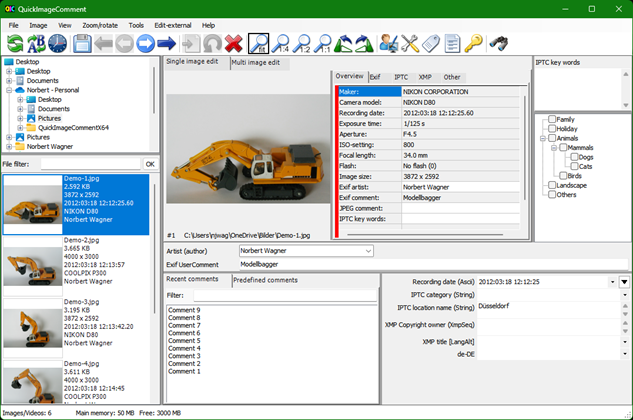
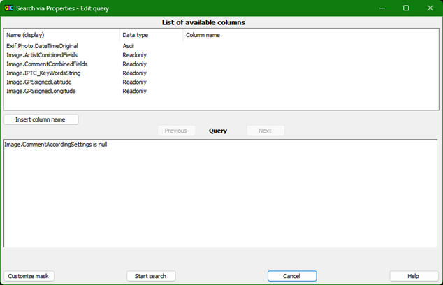
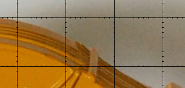
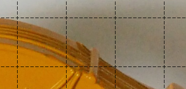

1 Introduction
QuickImageComment displays EXIF, IPTC, and XMP properties of digital images (e.g., JPEG and TIFF as well as some RAW formats) and allows to edit them. Especially editing of user comment and artist (author) is supported by using the last entered or predefined values. Metadata (XMP) in video files are displayed.
Overview of features:
· Display of all EXIF, IPTC and XMP properties of images, as well as some other file properties such as modification date.
· Display of meta data (XMP) of video files as well as (depending on the Windows version and, if necessary, installed components) display a frame of the video.
· Images or videos can be searched via their properties and recording location on map.
· In addition to the full lists of EXIF, IPTC and XMP properties a list of properties is displayed, which is configurable.
· In addition to user comment and artist further EXIF, IPTC and XMP properties can be changed. The list of modifiable properties can be configured.
· Data templates can be defined to set several properties in one step.
· Via placeholder it is possible to copy values of properties in others.
· Changes can be carried out simultaneously for two or more files.
· EXIF, IPTC and XMP properties can be deleted, thereby exceptions can be defined. Single properties can be deleted selectively.
· Files can be renamed using Exif, IPTC and XMP properties.
· The EXIF, IPTC and XMP properties contained in the files can be compared.
· A special mask is used to synchronize the recording time of a set of images taken with different cameras. Images are grouped by properties (mostly camera model). For each group, a shift of the recording time can be entered. Then the images are immediately sorted in order to check whether the images are then in the correct timely order.
· Selected image properties of all images/videos in a folder (including any subfolders) can be exported to a text file.
· All image properties of selected images/videos can be exported to text files (one file per image).
· Display of image details with graphical and numerical representation of brightness and RGB values.
· Display recording location in a map using the GPS coordinates; change of coordinates by selecting a position on the map.
Further processing of the images (e.g., adjusting the contrast and brightness) is not the purpose of this program.
For reading and changing the EXIF, IPTC, and XMP properties the library exiv2 is used. On www.exiv2.org a description of this library can be found as well as extensive information and links to Exif, IPTC and XMP. The formats supported by exiv2 are documented here:
· Images: http://dev.exiv2.org/projects/exiv2/wiki/Supported_image_formats
· Videos: http://dev.exiv2.org/projects/exiv2/wiki/Supported_video_formats
For displaying RAW images, the LibRaw library is integrated. If the camera manufacturer's codec or the Microsoft Raw Image Extension (which supports various RAW formats) are installed, they are used and then display is usually faster. One can install both a specific codec and the Microsoft Extension. The specific codec is then used for the corresponding images. For all others first the Microsoft Extension is tried and as last option the integrated LibRaw library. For the display of the metadata no codec is needed.
The program runs under Microsoft Windows 7, 8, 10 and 11 and is available as 32-bit and 64-bit variant. German or English can be selected as the language. There is also a variant with slightly reduced functionality available, which runs on Windows XP with .Net 4.0 framework.
QuickImageComment is free software; you can use it under the terms of the GNU General Public License as published by the Free Software Foundation, for Details see chapter Licenses.
2 Installation, Start, De-installation
ZIP-files
Preconditions:
· Operating System Windows 7 or higher
· .NET 4.6.1 (or higher)
Four zip files are available:
· 32-bit
· 64-bit
An installation in the usual sense is not necessary. The zip file can be unpacked into any directory on your computer.
To uninstall the program, delete the directory and the configuration file in %AppData%.
The registry is not changed by the program.
ZIP file for Windows XP and .Net 4.0
There is also a variant with slightly limited functionality that runs on Windows XP with the .Net 4.0 framework. The limitations of this variant:
· It does not include LibRaw for display of RAW images, so for display of RAW images a manufacturer's codec or the Microsoft Raw Image Extension is needed.
· Google Maps or Bing Maps cannot be used for the map display in the program itself, only via "Map in Standard Browser".
· It does not support using AppCenter.ms which allows sending error
reports and anonymous usage data.
Note: Using AppCenter.ms has to be enabled explicitly in the variant for .Net
4.6.1, so using the variant for Windows XP/.Net 4.0 is not necessary to avoid
sending data via AppCenter.ms.
Microsoft Store
QuickImageComment is also available in Microsoft Store:
https://www.microsoft.com/store/apps/9PGFF2B2FBR8
The package in Microsoft Store is certified by Microsoft.
When using an installation from Microsoft Store you have no access to config folder of program path. However reasonable changes you would like to do there can be done in a new file stored in folder %APPDATA%. For details see following chapters:
First usage
During the first start you will be asked for the language to be used and are offered the possibility, to check the availability of a new version automatically in the future.
After the first start the default settings in Mask "Settings" and Mask "Field definitions" should be checked and adjusted according to your own needs. These and other settings during the use of the program will be written when exiting in a configuration file in %AppData% or in the program folder (see also User related configuration file).
When the program is started via command line (see Command line arguments), a folder- or filename can be passed as argument. If a shortcut to the program is added in folder "%Appdata%\Microsoft\Windows\SendTo", folder, images or videos can be opened via entry "Send to" in the context menu of Windows Explorer.
Folders, images or videos can be opened via drag-and-drop.
With some Browser also images from Internet can be opened via Drag-and-Drop. For this purpose, they are downloaded into the folder "Downloads". This is tested with Google Chrome, Microsoft Edge and Firefox; it does not work with Internet Explorer.
3 Main mask [CHM InvariantName="FormQuickImageComment"]
The main mask and its usage are described in the following sections:
· Layout of mask and adjustments
· Selection and display of images
· Selection and display of videos
· Tool bar
· Footer
Via the menu bar of the main mask, symbols (see Tool bar) and sometimes keyboard shortcuts (see Keyboard shortcuts) following masks with additional functionalities can be opened:
· Mask "Search via properties"
· Mask "Change recording date and time"
· Mask "Predefined IPTC key words"
· Mask "Select and edit data template"
3.1 Layout of mask and adjustments
The main mask is divided into several sections:

The following diagram identifies the areas:
Except for the picture all areas can be shown or hidden individually via the Mask "Adjust view" (menu entry "View - adjust). In the central input area fields for artist and comment can be individually enabled and hidden. In one of these areas image details and map can be displayed. For more details see chapters Display of image details and Recording location on map.
There is also the possibility of using the menu item "View - Only image and input fields" to hide all areas except the central input area. With selecting this menu item, a second time the previous view is restored.
The size of the different areas can be adjusted by moving the grey dividing lines, where for each area a minimum size cannot be exceeded. For clarity, the dividing lines are black in the picture below:

Via the menu entry "View - Command strip" (or Mask "Adjust view"), the toolbar can be displayed, hidden or displayed next to the menu. The last variant allows the use of symbols, but does not reduce the available height for the mask. However, then the symbols are relatively small.
Using the menu "View", the context menu (right-click in file list), or using the Mask "Adjust view" the file list can be shown in the following variants:
· Thumbnail
· Tiles
· List
· Details
In view "tiles" additional to the file names up to five more freely selectable properties can be displayed in file list. The listed configurable input field properties and the properties displayed in the "Overview" tab can also be chosen free. The selection of properties is done in Mask "Field definitions", group "Display of files in view of "Tiles"", "Change of properties" and "display in tab "Overview"".
The files can be sorted by ascending or descending order using the menu "View", the context menu in file list or by clicking on the headers in view "Details".:
· Name
· Size
· Modified at
· Created at
Size of thumbnails and spaces in views Thumbnail and Tiles can be adjusted via General configuration file.
Using the Mask "Adjust view" the content of all areas except the one with image and central input fields can be assigned at your choice.
For example, if you do not need the lists of recent and predefined comments and IPTC Keywords, you can hide them and thus have more space for the image and / or the display of the properties in the upper region as well as for the values in the Configurable input area:
Additionally, the areas "Folder" and "File list" can be displayed side by side instead of one above the other for a better usage of wide monitors:
The same is possible for the both areas on the right-hand side, on top with image, properties and IPTC keywords, on bottom with last and predefined keywords and configurable input area.
These adjustments can be saved under a name in Mask "Adjust view". The named settings can be activated in the menu "View".
In addition, the appearance of the mask can be largely customized itself. For more detail see Mask "Customize mask". These customizations can be removed using the menu item "Tools - Remove adjustments all masks".
3.2 Selection and display of images
Note: In the following description, it is assumed that all areas are displayed (see also Layout of mask and adjustments) and the contents of the areas are not exchanged.
Via the folder list on the upper left-hand side a folder is selected. In the area below its images and videos are displayed. In general, directory tree and file list are updated automatically, when a folder or file was added, renamed or deleted by another program.
Sometimes the update does not work or is delayed. Then via menu item "File - Refresh file list" the folder is read again and the file list is updated. The list can also be updated using symbol (see Tool bar) or via a keyboard shortcut (see Keyboard shortcuts). The folder list can be refreshed using menu item "File - Refresh folder tree".
The files can be filtered. Therefore, a textbox is located above the file list. There you can enter a text that must be included in the name of the files to be displayed. Alternatively, a text with wildcard characters can be entered, to which the file name must match. Upper and lower case is not considered.
Wildcard characters:
|
? |
corresponds to any one character at a given position |
|
* |
corresponds to any number of characters |
Examples:
|
Filter |
results in |
|
abc |
files with "abc" in the name |
|
abc* |
files starting with "abc |
|
*.dng |
files with "dng" extension |
|
ab?c* |
files starting with "ab", followed by one character, "c" and any characters |
With Return key or Ok button next to the text box the filter is activated.
Using the menu "View", the context menu (right-click in file list), or using the Mask "Adjust view" the file list can be shown in the following variants:
· Thumbnail
· Tiles
· List
· Details
The properties shown in the view "Tiles" can be selected in the Mask "Field definitions", group "Display of files in view "Tiles"". The mask can be opened via context menu in file list (in this case directly with selection of group) or via menu.
The column width in the view "List" corresponds to the column width for column "Name" as set in view "Details".
Several grids can be displayed in top of the image, for example to examine the distortion of a lens or to "measure" details. Using entry "Define grid ..." in menu "View" the Mask "Define grid" can be opened to define up to six grids. With the menu item "Image with grid" display of grid is switched on or off. By moving the mouse while holding down the right mouse button over the image, the grid can be moved. If image details are displayed (see Display of image details), the grid will be moved, when the mouse pointer is outside the frame, which marks the detail area. If the mouse pointer is inside the frame while holding the right mouse button, the Details section is moved.
The image selected in the file list is displayed in the middle of the mask in the tab "Single image edit". Via symbols (see Tool bar), the menu "Zoom/Rotate" or shortcut (see Keyboard shortcuts) the magnification can be changed and the image can be rotated. The rotation of the image is only for display, the image file itself is not changed.
The magnification can be selected:
· fit (the picture fills the available space)
· 1:4 = reduction 1:4 (referring to the pixel)
· 1:2 = reduction 1:2 (referring to the pixel)
· 1:1 = one pixel in the image is represented as a pixel on the screen
· 2:1 = magnification 2:1 (referring to the pixel)
· 4:1 = magnification 4:1 (referring to the pixel)
· 8:1 = magnification 8:1 (referring to the pixel; for technical reasons, only available in the 64-bit variant)
In the settings 1:4 to 8:1 magnification depends on the resolution of the image.
In the "Zoom/Rotate" menu is the option to select a magnification factor. This does not refer to the pixels, but to the size of the image in the available frame. Factor "x 2" means, that the image is displayed twice as large as with "fit" - regardless of the resolution of the image.
In case the image is bigger than the available space, the visible area can be shifted using the scroll bars on bottom and right or by moving the mouse with left button pressed.
Images can contain an Exif information with the orientation (Exif.Image.Orientation or manufacturer-specific tags). If this is present, the image will be rotated accordingly. For RAW images, this only applies if this is selected via the menu item "Zoom/Rotate - RAW: Rotate after decoding", because many RAW decoders already rotate the image accordingly. If it is selected on one image, it applies to all images read with the same decoder. The menu item is only active if it is a RAW image that is to be rotated according to the Exif information.
Right to the tab "Single image edit" are five tabs in which properties of the image are displayed:
· Overview
A selection of properties, which can be customized using Mask "Field definitions", group "Display in tab "Overview" ...", separated for images and Videos. The mask can be opened via context menu in list of properties (in this case directly with selection of group) or via menu.
In the Overview tab a red bar on the left indicates, that there is a conspicuity or error in the properties. These are displayed in the bottom of this tab. A conspicuity may be:
— For certain properties for which there should be only one value, there are several values in the image.
— The various properties (Exif, IPTC, XMP) in which artists (Author) and comment will be saved, have different values.
Errors may be reported by the library exiv2 when reading the properties, such as "The memory contains data of image at unknown type".
Errors can also occur when displaying the image. If a message starting with "BitmapDecoder:" or "LibRaw:" is displayed next to "Error displaying image", a codec for reading the RAW image is missing and should be installed. As an alternative, the Microsoft Raw Image Extension can be installed, which supports various RAW formats. Other messages indicate a software error and should be reported to quickimagecomment@gmail.com.
Properties can be marked (using the left mouse button) and then - using the context menu (right mouse button) - added to area for changeable properties, the fields for search or into the multi-edit-table.
· Exif
· IPTC
· XMP
For properties of type "LangAlt" the first value is for default language (x-default), then values for specific languages are listed; the language identifier is shown after the name of the property.
· Others, such as:
— File Properties
— ExifEasy properties (values are selected from a several Exif properties, for details see Hints on special properties)
— Properties that are defined in general configuration file (see Adjustment and configuration and General configuration file)
For the tables in the tabs Exif, IPTC, XMP and Other you can use the context menu (right mouse button) or the Mask "Adjust view" to select one of the following views:
· List with Headings
This is the default view. The properties are assigned to different groups. Before each group the group name is displayed in a grey shaded cell. By clicking in the grey line, the properties belonging to the group can be shown or hidden.
· Simple list
In this view, the group name does not appear on a separate line but is at the beginning of the tag name, so a little more width is required for viewing. In this view, the columns can be sorted, e.g., by the tag.
· Simple list, group at the end
In this view, the group name does not appear on a separate line but is at the end of tag name. In this way properties can be sorted regardless of their group. This is useful (especially in case of manufacturer-specific properties) if you do not know in which group a property can be found. In addition, there are properties that are included in different groups - these are then also with each other.
· List of headings - English
Same as "List with Headings", tag names in English
· Simple List - English
Same as "Simple list", tag names in English
· Simple list, group at the end - English
Same as "Simple list, group at the end", tag names in English.
In these tables, fields can be marked (using the left mouse button) and then - using the context menu (right mouse button) - added to area for changeable properties, the tab "Overview", the fields for search or into the multi-edit-table.
Hint for language "German":
In the views "List with Headings" and "Simple List" mainly German tag names are displayed. If the meaning of the tag and thus a correct translation was not sure, it was not translated and the original (English) name is displayed. Translations are preferably chosen so that tags belonging together are together in the sort order.
Example: "Category" and "SuppCategory" were translated as "Kategorie" and "Kategorie zusätzlich", not as "Kategorie" and "zusätzliche Kategorie".
In this way the sorting in display with group at the end has a higher benefit for German than for English.
In the tabs Exif, IPTC and XMP the description of the property (if available) is displayed when the mouse hovers over the first column.
On the far right, the IPTC key words are displayed. IPTC key words can be predefined in the program (Mask "Predefined IPTC key words"). The pre-defined key words are listed here with a checkbox. Additional key words (free text) can be directly assigned to the image. These are entered in the field at the top.
On the bottom right is the configurable input area. Here configurable properties are displayed, which can be changed there too. The properties can be selected in the Mask "Field definitions", group "Change of properties". The mask can be opened via context menu in this area (in this case directly with selection of group) or via menu. Additionally, properties can be marked in the tabs Exif, IPTC, XMP or Others and then added using the context menu.
If the image is changed by another program and there are no unsaved changes in this program, the display is refreshed automatically.
3.3 Selection and display of videos
In addition to the display of images and their properties, frames from video files and their properties can be displayed. The remarks of Selection and display of images also apply to videos. The program basically supports all video file types, which are also supported from the library exiv2 (www.exiv2.org). In the Mask "Settings", the file extensions can be defined, which are displayed in the file list. For them the metadata are displayed.
For videos other properties can be selected than for images to be displayed in tab "Overview" and for display of files in the view "Tile". For this purpose, the list for the group of properties in Mask "Field definitions" contains following entries:
· Display in tab "Overview" - Video
· Display of files in view "Tiles" - Video
The display of frames from the video file depends on the operating system and possibly from installed components. Unfortunately, I could not find a solution that works on all (still) popular Windows operating systems. If no frame can be displayed, unfortunately this is not directly shown by a corresponding notice, but shows up in the way, that after a certain delay a black screen will appear. Therefore, in the Mask "Settings" separately it can be defined, for which video file types a frame is displayed. Depending on the video file and computer it can take a long time until a frame is displayed. This may be a reason to avoid the display of frames without having to sacrifice the display of metadata.
It is not the first frame of the video, which is displayed, but a frame after a predetermined time difference from the start. The pre-set can be defined in the Mask "Settings". Below the frame (above the file name), a different frame position can be selected for each video individually.
Changes in the metadata of video files are not possible.
The display of the video itself is not part of the program, but - as long as the respective video type is supported by the system - is possible by double click in the file list. This will open the program that is associated with the appropriate file type.
If the video is changed by another program, the display is refreshed automatically.
3.4 Display of image details
The image details can be shown in two ways:
· In main mask: Use Mask "Adjust view" to adjust the main mask so that "image details" is displayed in one of the areas.
· In own window: Open own window via menu entry "Tools - Image details in own window".
The display of image details is useful to
· view parts of the image magnified
· see brightness and color gradients graphically and numerically
· analyze images with pixel accuracy
Bottom left you can see the image section. The visible area of image can be shifted by moving the mouse with left button pressed. Above and on the right, graphics represent the brightness profile along the horizontal and vertical centerlines.
In the right part are:
· Position X and Y: display and input capability for the X and Y position of the upper left corner of the detail of the selected image displayed here
· Zoom: Shortlist for magnification
By selecting "variable" the slider below the selection list for setting the magnification factor is enabled.
Various fixed magnifications of 4:1 to 1:5 can be selected directly.
With the "1:3 grid" and "1:5 grid", the pixels of the image are represented by 3x3 or 5x5 pixels. A grid line is placed centrally over the pixels in order to align the pixels exactly to their values in the graphs.
· A table shows the brightness value and the values for red, green and blue for:
— Pixel under the mouse pointer
— minimum value in the horizontal centerline
— maximum value in the horizontal centerline
— minimum value in the vertical centerline
— maximum value in the vertical centerline
· Graphics: In the selection list it can be selected if both, none, only the horizontal or only the vertical graph are displayed.
· R, G, B: Using these checkboxes it can be selected individually, whether in addition to the brightness, curves for red, green and blue are displayed.
· Grid Size: The setting for grid size is only relevant for the zoom settings "1: 3 grid" and "1: 5 grid". The value 20 indicates here that every 20 pixels of the image a grid line is drawn.
· Scale lines: The value of 4 indicates that 4 scale lines are shown in the graphs.
· Frame color: Using this button, the color of the frame can be defined, which highlights the displayed detail section in the main picture box.
· Grid color: Using this button the color of the grid and scale lines can be defined.
In the main picture box, the displayed detail section is marked by a frame with horizontal and vertical centerline. When the mouse pointer is within the frame, the detail section can be shifted by moving the mouse while holding the right mouse button.
The information for image details is preferably displayed in a region which is in landscape mode. If the area is in portrait mode (taller than wide), the graphics are displayed in the upper part, the other controls are shown below.
Examples of use:
Examination of vignetting:
Testing of color noise of an image taken with compact camera and ISO-setting:
In the following picture you can clearly see that although the narrow lines on the right-hand side can be seen separated, the difference between light and dark line becomes increasingly much smaller:
3.5 Recording location on map
The recording location on map can be shown in two ways:
· In main mask: Use Mask "Adjust view" to adjust the main mask so that "map" is displayed in one of the areas.
· In own window: Open own window via menu entry "Tools - Map in own window".
For display and change of recording
location on a map OpenStreetMap is used. The license conditions of OpenStreetMap
have to be considered:
https://www.openstreetmap.org/copyright
Hint: Technically it would also be possible to use Google Maps, but this would require a fee-based account. With Bing Maps, at least a personalized key is necessary. Due to that, the full functionality is only offered with OpenStreetMap.
The display (only display, no change) of the recording location in maps from Google Maps or Bing Maps is possible
· via display of a map in the standard browser, see Other features.
· in the variant for .Net 4.6.1 or higher and if WebView2 runtime is installed, more details at the end of this chapter.
Note for users of the variant for Windows XP/.Net 4.0: The maps are loaded via Internet Explorer. Windows XP only runs old versions of Internet Explorer, which massively limits the number of usable maps. So, it seems (as of December 2022) with Internet Explorer 8 it is only possible to use the maps from OpenStreetMap.Mapnik, when selecting other maps, the display remains blank.
Functionality with OpenStreetMap
In the displayed map section two buttons "+" and "-" are shown in the upper left corner to select the zoom factor. Zoom factor can be changed via mouse wheel as well. With pressed shift key, left mouse button und mouse pointer an area can be marked which then is shown enlarged.
In case the selected image contains GPS-coordinates, the corresponding map section is displayed and the recording location is marked. The map section can be moved with the mouse. Via moving the marker, a new position can be set, which then can be stored in the image together with the other changed data (e.g., comment).
In case the selected image does not contain GPS-coordinates, the map section around the last used position will be displayed without marker. By using the right mouse button, a marker can be set, which also can be moved later. An existing marker can be removed with the right mouse button.
Below the map section you find:
· Combo box for search and selection of a position
Here you can enter addresses or other
search criteria (e.g., "New York, central station") to find the
corresponding location on the map. The search is started via Return-key or
button "OK". Alternatively, coordinates such as
52.432N 8.345E
or
52°30'18.4"S 8°42'32.9"W
can be entered. Point or comma can be used as decimal separator. The last
search results as well as the last positions saved in an image are shown when
the combo box is opened and can be selected there. After selection, the
corresponding map section is shown and the position is marked there.
· Button "OK"
After pressing this button, the search for a position is started. When the position is found, corresponding map section is shown and the position is marked there.
· Button "Centre"
After pressing this button, the map is moved in a way that the marker is shown in the center.
· Button "Reset"
In case coordinates were already stored in the image and the marker was moved, the marker will be moved back to the stored position. In case no coordinates were stored in the image and a marker was set, the marker will be removed.
· Selection list for map source
One of the following sources can be selected:
|
Name |
Type |
Max. Zoom |
Copyright |
|
CartoDB.Voyager |
Street |
19 |
© OpenStreetMap contributors © CartoDB |
|
CartoDB.VoyagerLabelsUnder |
Street |
19 |
© OpenStreetMap contributors © CartoDB |
|
Esri.WorldImagenery |
Satellite |
20 |
Tiles © Esri — Source: Esri, i-cubed, USDA, USGS, AEX, GeoEye, Getmapping, Aerogrid, IGN, IGP, UPR-EGP, and the GIS User Community |
|
Esri.WorldImagenery+ Hydda.RoadsAndLabels |
hybrid (Satellite + Street up to Zoom 17) |
20 |
Tiles © Esri — Source: Esri, i-cubed, USDA, USGS, AEX, GeoEye, Getmapping, Aerogrid, IGN, IGP, UPR-EGP, and the GIS User Community, Tiles courtesy of OpenStreetMap Sweden — Map data © OpenStreetMap contributors |
|
Esri.WorldImagenery+ Stamen.TonerHybrid |
hybrid (Satellite + Street) |
20 |
Tiles © Esri — Source: Esri, i-cubed, USDA, USGS, AEX, GeoEye, Getmapping, Aerogrid, IGN, IGP, UPR-EGP, and the GIS User Community, Map tiles by Stamen Design, CC BY 3.0 — Map data © OpenStreetMap contributors |
|
Esri.WorldStreetMap |
Street |
19 |
Tiles © Esri — Source: Esri, DeLorme, NAVTEQ, USGS, Intermap, iPC, NRCAN, Esri Japan, METI, Esri China (Hong Kong), Esri (Thailand), TomTom, 2012 |
|
Esri.WorldTopoMap |
topographic |
19 |
Tiles © Esri — Esri, DeLorme, NAVTEQ, TomTom, Intermap, iPC, USGS, FAO, NPS, NRCAN, GeoBase, Kadaster NL, Ordnance Survey, Esri Japan, METI, Esri China (Hong Kong), and the GIS User Community |
|
OpenStreetMap.Mapnik |
Street |
18 |
© OpenStreetMap contributors |
|
OpenStreetMapDE |
Street |
18 |
© OpenStreetMap contributors |
|
OpenTopoMap |
topographic |
17 |
Map data: © OpenStreetMap contributors, SRTM | Map style: © OpenTopoMap (CC-BY-SA) |
|
Stamen.Terrain |
Terrain |
17 |
Map tiles by Stamen Design, CC BY 3.0 — Map data © OpenStreetMap contributors |
|
Wikimedia |
Street |
19 |
Workaround: without this hidden paragraph the paragraph after this is truncated in html.
· Checkbox "incl. maps for display only (* ...)"
If checked, additional maps that can
only be used for display are displayed in the selection list, see also Displaying the recording
location on maps from Google Maps/Bing Maps below.
Background information: Google Maps and Bing Maps require WebView2. However,
WebView2 occasionally causes problems. These problems are avoided if you do not
check this option, However, this means that Google Maps and Bing Maps are not
usable.
· Button "Rename"
If a position is selected in the combo box for search and selection, it can be renamed. This allows especially saved locations, which are initially only listed with coordinates, to be given a meaningful name. After pressing the button, a mask is opened in which the new name is to be entered.
· Button "Delete"
If a position is selected in the combo box for search and selection, it can be deleted.
Note: The maximum number of named and unnamed positions that are saved in the user-related configuration file when the program is closed is defined in Mask "Settings".
· Display of position and zoom
In the center below the zoom factor selected in the map as well as the latitude and longitude of the marked position are displayed.
The bottom right corner of the map contains links to "Leaflet" (this component is used to display the map) and links to the sources for showing maps, which are opened in standard browser.
The configuration of maps is based on:
http://leaflet-extras.github.io/leaflet-providers/preview/.
Additional map sources for Leaflet can be configured, see Configuration of Leaflet map sources.
Displaying the recording location on maps from Google Maps/Bing Maps
The recording location can be displayed in the program on maps from Google Maps or Bing Maps if the following requirements are met:
· The variant for .Net 4.6.1 and higher is used.
· WebView2 Runtime is installed.
The map options configured as URLs (Google Maps, Bing Maps and possibly others, see Configuration of URLs for displaying a map) can then be selected. These options are marked with "*" at the beginning.
With these map options, the recording location can only be displayed but not changed. Therefore, all the controls listed above are not activated, except for the selection list for map source. The display in the program is only an integrated web browser and the terms and conditions of Google Maps or Bing Maps apply for the use and privacy, for self-defined map sources the conditions of the respective provider.
If WebView2 Runtime is not yet installed, it can be downloaded here:
https://developer.microsoft.com/en-us/microsoft-edge/webview2/#download-section
On this page, select and install the "Evergreen Standalone Installer" suitable for the operating system.
Before installing WebView2 Runtime, you can use the menu item "Tools - Map in Standard Browser" to check whether the additional map options are useful for.
3.6 Single image edit
For the editing of single images, the tab "single image edit" has to be selected.
Below the picture are:
· Combo box for the name of the artist (author)
The name can be entered directly. When you save the name, it will be entered in a list so that the name later can be selected from the list or is completed after entering the first letters.
If no artist was entered for the image, a default can be used (defined in the Mask "Settings"). If the default is used, this is indicated by a note behind the combo box.
The label of the input field is dynamic. If in the Mask "Settings" no field (tag) has been configured to store the name, "not configured" is displayed as the label and the input field is not active. If exactly one field is configured to store the name, this field will be displayed. If more than one value is configured, the input field is labelled with "Artist (author)".
· Text field for comment
The comment can be freely entered or taken from the lists "Recent comments" or "Predefined comments" and then can be changed. Once the input begins, the input is used as filter for the list "Recent comments", i.e., the list displays the entries in which the text entered in the text field for comment is included. However, this requires that the tab "Recent comments" is in front, not "Predefined comments".
When you save the comment it will be added to the list of recent comments. If it is configured (see Mask "Settings") you can jump directly into the list of "Recent comments" using the cursor down key. In this case, if necessary, it is automatically switched from the tab "Predefined comments" to tab "Recent comments".
The label of the input field is dynamic. If in the Mask "Settings" no field (tag) has been configured to store the comment, "not configured" is displayed as the label and the input field is not active. If exactly one field is configured to store the comment, this field will be displayed. If more than one value is configured, the input field is labelled with "Comment".
Two lists are available for an easier entry of the comment:
· Recent comments
This list displays the most recent comments saved. Above the list there is a text box for entering a filter. If, for example, "Smith" is entered there, all comments are displayed in the list that contains "Smith". Also, after an input in the text field for comment the list is filtered accordingly.
· Predefined comments
This list displays comments, which have been predefined in Mask "Predefined comments". In that mask predefined comments are assigned to a category (e.g., city, Last Name). Above the list is a selection list for these categories. With "*", all entries are displayed.
Entries from the two lists can be transferred into the text field for comment via the context menu of the list (right mouse button) or via a keyboard shortcut:
· Transfer (overwriting the text field for comment)
Keyboard shortcut: Return key
· Append with space
Keyboard shortcut: Spacebar
· Append with comma
Keyboard shortcuts: Comma
· Append with semicolon
Keyboard shortcut: Semicolon
For the assignment of IPTC keywords there are two options in the input area on the far right:
· Text box for free key words
In the text box on top several key words can be entered. Each line is regarded as a keyword. Keywords can include spaces.
· Tree with check boxes for predefined keywords
In the Mask "Predefined IPTC key words" predefined keywords with hierarchy can be defined. For each of these keywords a check box is displayed.
Configurable input area
On the bottom right is a configurable area in which additional properties can be changed. The configuration is done in the Mask "Field definitions", group "Change of properties". The mask can be opened via context menu in this area (in this case directly with selection of group) or via menu.
On the left-hand side of each input field is the description, supplemented by the data type of the field. If multiple values are allowed for a property by the program, the text box is displayed with vertical scroll bar. The number of rows displayed is configured in Mask "Field definitions". One row corresponds to one value. Properties, for which only one value is allowed, are displayed in a combo box. This makes it possible to select recently entered values for this property.
For properties of type "date" is a small button on the right-hand side of the input field:

With this button a calendar is opened to select a date. For properties, which can have several values, only the first date can be set via the calendar.
For property "Exif.Image.Orientation" (type: Short), a drop down list shows the valid (numeric) values together with an explanation (e.g., "bottom, left (180° + horiz.flip)"). After saving changes of Exif.Image.Orientation, image will be rotated accordingly.
For Exif properties the program allows only one value. For IPTC and XMP properties it depends on the particular property or the data type. According to the Exif specification, it seems permissible to assign several values to each property and the library exiv2 used in the program allows it too. However, there is (almost) no Exif property for which multiple values are meaningful and also other programs usually do not support it. Therefore, this program allows only one value per Exif property. If multiple values were assigned to an Exif property with another program, these values will be shown as one string in the input box, separated by vertical bar ("|"). This string can be changed. Only one value is stored then.
Special features are XMP properties of the data type "LangAlt". For them multiple values can be defined, with one value for the default language and one value for each additional language. The mask contains a corresponding number of input boxes for each property. The languages can be selected in the Mask "Settings".
In the following example, the input fields for the XMP property Xmp.dc.title are shown. As a description "XMP title" was configured. The text box directly on the right-hand side of this label is used for the value of the default language, below fields for German (Germany) and English (United States):
In case in the image a value is defined for a language that is not selected in Mask "Settings", it is displayed additionally and the value for this language can be changed too.
XMP properties of the data type "XmpText" can have very complex values, such as the following value, which was added by Windows Live Photo Gallery as information about people displayed in the image:
/MPRI:Regions[1]/MPReg:Rectangle=0.210938, 0.477372, 0.079102, 0.119708
/MPRI:Regions[1]/MPReg:PersonDisplayName=Max Mustermann
/MPRI:Regions[2]/MPReg:Rectangle=0.498047, 0.421898, 0.084961, 0.125547
/MPRI:Regions[2]/MPReg:PersonDisplayName=Barbara Beispielfrau
/MPRI:Regions[2]/MPReg:PersonEmailDigest=1234567890ABCDEF1234567890ABCDEF123456
/MPRI:Regions[2]/MPReg:PersonLiveIdCID=1234567890123456789
/MPRI:Regions[2]/MPReg:PersonSourceID=WL:1234567890123456789
This program can not verify the validity of those values. On the other hand, usually you will change such complex values also with the program, with which the values originally were assigned. But in this particular example, you could delete the values for PersonEmailDigest, PersonLiveIdCID and PersonSourceID for reasons of data protection before distributing the image. For the same reason you might also just save the first name instead of the full name. In this way not the whole information is lost, who is displayed in the picture.
Separate mask for data input
With the F10 key or double-click in input fields for artist (author), comment or in configurable input area, a Mask for input of data is opened to have a larger and variable input range for long and/or multi-line values. Via this mask also the Mask "Edit / insert placeholder" can be opened.Mask to insert and edit placeholders
Mask to insert and edit placeholders
With the Shift-F10 key or double-click with Shift-key in input fields for artist (author), comment or in configurable input area the Mask "Edit / insert placeholder" is opened. Placeholders are replaced with the value of the referenced property during saving and thus allow copying values from one property to another.
Reset entries
By pressing the Esc key, the inputs for artists, comment and IPTC keywords as well as in the configurable input range are reset and the corresponding values from the image are displayed again. With the menu item "Image - Reset" or the corresponding icon (see Tool bar), all inputs to the image are reset.
Color marking of inputs
Changed entries for artist, comment and IPTC keywords as well as in the configurable input area are marked by a light-yellow background. If the entry is reset, the background becomes white again.
Instead of light-yellow, another color can be specified in the general configuration file: General configuration file - Colors.
Restrictions
Some properties can be changed, but cannot be added. This is especially true for vendor-specific EXIF information and for the more complex XMP data structures. If properties could not be added, a message is displayed after saving.
Input in the tabs for properties
Some properties can also be changed in the "Overview", "Exif" and "IPTC" tabs. Changeable values are displayed with a white background, non-changeable ones with a light gray background.
Changing the properties is only possible in single image editing. In contrast to input in the configurable input area, it is not possible to define input checks and to select older input directly. Input in the tabs is enabled for simple texts to make occasional changes without configuring an input field for this purpose.
Since properties can be changed both in the tabs and in the standard input fields, conflicts may occur. These are detected when you save and you can then decide which input to use.
Here for information are the rules for what properties can be changed in the tabs:
· The data type is one of the following:
— Ascii - except for Exif date values.
— Comment
— Byte, if used for UCS2 encoded text
— String
Numeric data types are not supported here. Examples for these values are exposure time, aperture and resolution. For these examples, and for the vast majority (if not all) numeric values, it is not useful to change them after the image has been taken. For some tags (e.g. Exif.Image.ExifTag = pointer to EXIF IFD) there is an additional risk that a wrong value will cause the metadata as a whole to become unreadable.
Changing values for date/time is not supported here, because these values are mostly set when the file is created and should hardly be changed afterwards.
· The representation of the value in the tab corresponds to the original format for this property.
This condition is almost always met for the supported data types, regardless of the display format.
Example for a property where this is not always given: Exif.GPSInfo.GPSLongitudeRef is stored as "E" or "W". If "Interpreted" is selected for the display, "East" or "West" will be displayed. Then the value cannot be changed.
In the following two cases the display format must be set to "Interpreted" for a change:
— UCS2 encoded text is stored as a byte sequence, so original format is a number sequence - which would be very unwieldy for input.
— For the Comment data type, the original format consists of the charset specification and the actual value. Since the charset specification is set via Mask "Settings", it should not interfere with input.
· Only one value can be stored for the property.
This restriction is made because entering multiple values in two places (in a tab for properties and in the configurable input area or the input area for IPTC keywords) can lead to further conflicts. The decision would then arise not only which of two values to save, but which values from two lists of values. In the sense of a simple handling - and for it the input in the tabs of properties is made possible - therefore only properties with one value are supported here.
Since all XMP data types provide to store several values for one property, the input in the tab "XMP" is not possible.
Save changes
The changes can be saved by:
· Menu item "Image - Save"
· Menu item "Image - Previous" (after saving the previous image is displayed)
· Menu item "Image - Next" (after saving the next image is displayed)
· Return key in the text field for comment (if configured in this way, see Mask "Settings")
For these menu items, there are also icons in the toolbar (see Tool bar) and keyboard shortcuts (see Keyboard shortcuts).
3.7 Multiple images edit
In order to edit several images in one batch the tab "Multi image edit" has to be selected.
To change the properties of several images together, these images first have to be selected. But you also can add images to the selection later. If all images have same value for one property (e.g., all images have the same artist), this value is also displayed. If they have different values, the corresponding field is left blank.
On the right-hand side in the tab "Multi image edit" a table with the selected images and their current values will be displayed for the chosen properties. The properties can be defined in Mask "Field definitions", group "Table view during multiple editing". The mask can be opened via context menu in the table (in this case directly with selection of group) or via menu. By clicking on the column header, the images are sorted by the column. By clicking on a line, the corresponding image will be selected and will be displayed when you switch to tab "Single image edit".
The values for properties are input in the appropriate fields as described in Single image edit.
For each property you can decide whether they are to be taken over for all images. For the comment you have following possibilities:
· No change of existing comment
· Overwrite existing comment
· Insert new comment before existing
· Append new comment to existing
For the IPTC key words you have following possibilities:
· No change of existing key words
· Overwrite existing key words
· Append new key words
For all other values you can define via checkboxes whether the value is taken over or not.
Changes in settings, whether data are to be taken over for all images, are marked with gold background. Instead of gold, another color can be specified in the general configuration file: General configuration file - Colors.
The changes are saved using the menu entry "Image - Save", the corresponding icon (see Tool bar) or the associated keyboard shortcut (see Keyboard shortcuts).
Notes:
The tab "Multi image edit" can also be used just to see different properties for a selection of images in one table. This is the reason why you can select any property in Mask "Field definitions" and you are not limited to editable properties there.
If an image is removed from the selection, no new comparison of the values takes place for performance reasons. If different values were found before and the corresponding field is empty because of that, it will not be filled if the values of the now still selected images are identical.
3.8 Other features
Menu "File"
|
Select folder ... |
Opens a mask, where a folder can be selected in a folder tree or from a drop-down list with last selected folders. In this way the space for folder tree in main mask can be used for other information, e.g., a longer a list of files. |
|
Open ... |
Opens an input mask to open folders or files via entering the full name (i.e., including complete path). Also, URLs can be entered, the respective file will then be downloaded into folder "Downloads". |
|
Search via properties |
|
|
Select all |
All images displayed in the file list are selected, e.g., to rename them. |
|
Refresh folder tree |
The folder tree is updated. In general, directory tree is updated automatically, when a folder was added, renamed or deleted by another program. Sometimes the update does not work or is delayed. Then this feature can be used to ensure an update. |
|
Refresh file list |
The file list is updated. In general file list is updated automatically, when a file was added, renamed or deleted by another program. Sometimes the update does not work or is delayed. Then this feature can be used to ensure an update. |
|
Rename files |
Opens Mask "Rename files" |
|
Compare files |
Opens Mask "Compare files" |
|
Change recording date/time |
|
|
Remove meta data |
Opens Mask "Remove meta data" |
|
Export: selected properties of images in folder |
Writes selected properties of all the images contained in one directory, including subdirectories, into a file. The file contains a header with the name of the exported properties and for each image one line with the values. The columns are separated by tabs, so that the file easily can be opened with Excel or another spreadsheet calculation program. Use Mask "Field definitions" (group: "Export of properties in text file") to define, which properties are exported. The file is encoded in UTF-8 with Byte Order Mark (BOM). |
|
Export: all properties of selected images |
Writes all properties of the selected images into files; for each image one text file with all properties (meta-data) of the image is created. The files are encoded in UTF-8 with Byte Order Mark (BOM). |
|
Set file date to date image generated |
The file properties "Created at" and "Modified at" can be set to the date/time when image was generated. The date when image was generated is read from Exif.Photo.DateTimeOriginal. The property can be changed in General configuration file. |
|
Exit |
Exit the program |
Menu "Image"
|
Save |
Save the changes in the image |
|
First |
Save the changes in the current image and switch to the first image |
|
Previous |
Save the changes in the current image and switch to the previous image |
|
Next |
Save the changes in the current image and switch to the next image |
|
Last |
Save the changes in the current image and switch to the last image |
|
Reset |
Changes in current image made since the last save are reset |
|
Delete |
Delete the selected image files, if it applies with associated files (see Mask "Settings", setting "rename and delete also for following file extensions") |
Menu "Tools"
|
Settings |
Opens Mask "Settings" |
|
Field definitions |
Opens Mask "Field definitions" |
|
Predefined comments |
|
|
Predefined IPTC key words |
|
|
Select/edit data template |
|
|
Load data from template: |
Load data from template; for more details see Mask "Select and edit data template" |
|
Image in own window |
|
|
Image details in own window |
An additional window is opened to show the image details (see Display of image details). Hint: only possible, if image details are not yet displayed in main mask; useful if two monitors are available. |
|
Map in own window |
An additional window is opened to show a map (see Recording location on map). Hint: only possible, if map is not yet displayed in main mask; useful if two monitors are available. |
|
Map in Standard Browser |
A submenu contains several options for displaying Google Maps and Bing Maps in the default browser. URLs for this display are stored in General configuration file, which contains also further hints to change the entries or add new ones. Note: change of GPS-data is not possible here. |
|
Customize mask |
Opens Mask "Customize mask" |
|
Remove all mask adjustments |
Removes all adjustments in all masks, which were defined using Mask "Customize mask" and set to default values again. |
|
Language |
For selection of language (Deutsch, English) |
|
Storage location for user settings |
Opens a mask to display and change the storage location for user settings: · %Appdata%: If several users are created on the computer, each user has his own settings. Settings are kept during upgrade on newer program version. Also to be selected, if Program folder is write-protected. · Program folder: Recommended for portable usage on USB-stick: the settings are on USB-stick too, no settings will be stored on other computer. When upgrading to a newer program version, settings need to be copied manually or program files in currently used folder have to be overwritten. |
Menu "Edit-external"
|
… |
The beginning of the menu is filled dynamically according to the entries in Mask "Configuration Edit-external". |
|
Manage ... |
Menu "Help"
|
List shortcut keys |
Lists all shortcut keys for all masks |
|
About ... |
Displays mask with program information (version, etc.) |
|
Check for new version ... |
|
|
Webpage |
Direct access to the website www.quickimagecomment.de: Homepage with recent messages, download area and change history |
|
GitHub |
Direct access to the GitHub repository with source code, issues (errors, feature requests) and discussions |
|
Help |
Displays the help for this mask |
3.9 Tool bar
Via the menu "View" the tool bar can be displayed or hidden or displayed in the same row as the menu. The last option allows using the symbols without reducing the usable height of the main mask. However, then the symbols are rather small.
List of symbols:
|
|
Refresh file list In general file list is updated automatically, when a file was added, renamed or deleted by another program. Sometimes the update does not work or is delayed. Then this feature can be used to ensure an update. |
|
|
Opens Mask "Rename files" |
|
|
|
|
|
Save |
|
|
Save image and switch to first image |
|
|
Save image and switch to previous image |
|
|
Save image and switch to next image |
|
|
Save image and switch to last image |
|
|
Load data from template; for more details see Mask "Select and edit data template" |
|
|
Reset of changes since last save |
|
|
Delete image files, if it applies with associated files (see Mask "Settings", setting "rename and delete also for following file extensions") |
|
|
Zoom - fit (whole image is displayed) |
|
|
Zoom - 1:4 (show image with scale 1:4) |
|
|
Zoom - 1:2 (show image with scale 1:2) |
|
|
Zoom - 1:1 (show image with scale 1:1) |
|
|
Rotate image to the left (only for display, no change in image) |
|
|
Rotate image to the right (only for display, no change in image) |
|
|
Opens Mask "Adjust view" |
|
|
Opens Mask "Settings" |
|
|
Opens Mask "Field definitions" |
|
|
Opens Mask "Predefined comments" to enter and change predefined comments |
|
|
Opens Mask "Predefined IPTC key words" to enter and change predefined IPTC key words |
|
|
3.10 Keyboard shortcuts
The following general shortcut keys are defined:
|
F1 |
Opens help |
|
F2 |
Opens Mask "Rename files" |
|
F5 |
Refresh file list |
|
F6 |
Show image and central input fields only |
|
F7 |
Rotate image to the left (only for display, no change in image) |
|
F8 |
Rotate image to the right (only for display, no change in image) |
|
F11 |
Save image and switch to previous image If this assignment is deleted (see Mask "Customize mask", Shortcut key), F11 will toggle view mode between normal and maximized. |
|
F12 |
Save image and switch to next image |
|
Ctrl-1 |
Zoom - 1:1 (show image with scale 1:1) |
|
Ctrl-2 |
Zoom - 1:2 (show image with scale 1:2) |
|
Strg-4 |
Zoom - 1:4 (show image with scale 1:4) |
|
Ctrl-Shift-2 |
Zoom - 2:1 (show image with scale 2:1) |
|
Ctrl-Shift-4 |
Zoom - 4:1 (show image with scale 4:1) |
|
Ctrl-Shift-8 |
Zoom - 8:1 (show image with scale 8:1) |
|
Ctrl-E |
Opens Mask "Settings" |
|
Ctrl-F |
Zoom - fit (whole image is displayed) |
|
Ctrl-I |
Opens Mask "Predefined IPTC key words" to enter and change predefined IPTC key words |
|
Ctrl-K |
Opens Mask "Predefined comments" to enter and change predefined comments |
|
Ctrl-L |
Delete image file |
|
Ctrl-S |
Save |
These shortcut keys can be modified and new can be defined, see Mask "Customize mask". The current settings are displayed using menu entry "? - List shortcut keys".
Additionally, in special areas some shortcut keys are defined, which cannot be changed.
In the lists for last and predefined comments:
|
Return key |
Transfer (overwriting the text field for comment) |
|
Space bar |
Append with space |
|
Comma |
Append with comma |
|
Semicolon |
Append with semicolon |
In all input fields for properties:
|
Esc |
Reset input and show again the value saved in the image file |
In input fields for artist (author), comment and in configurable input area:
|
F10 |
Open a mask with larger and variable input field Mask for input of data |
|
Shift-F10 |
In the input field for comment:
|
Return key |
Save and show next image (if configured) |
In the input field for file filter above the file list:
|
Return key |
Refresh the file list using the filter |
3.11 Footer
In the footer are displayed:
· Number of images or videos in the file list
· Main memory (Physical memory in use by active processes) used by the program and free main memory
· Note if the displayed file is read-only or no access is allowed
· The information that an image is read ("read ...") when an image is to be displayed, which has not yet been read in advance and therefore is not present in the cache
·  , when the cache is stuffed (i.e.,
images are read on "stock")
, when the cache is stuffed (i.e.,
images are read on "stock")
4 Mask for input of data [CHM InvariantName="FormTagValueInput"]
With the F10 key or double-click in input fields for artist (author), comment or in configurable input area this mask is opened to have a larger and variable input range for long and/or multi-line values:
The size of the mask can be adjusted.
Command buttons:
|
< |
Scroll in recently stored values - back |
|
> |
Scroll in recently stored values - forward |
|
current value |
Show current value |
|
Edit/insert placeholder |
|
|
OK |
Accept input and close mask |
|
Cancel |
Close mask without accepting input |
5 Mask "Search via properties" [CHM InvariantName="FormFind.htm"]
With this mask you can search for images and videos using the stored properties.
Preparation
First you should define the fields you want to search with "Adjust fields". Only for these fields, data is read from the images, so that if you change the fields later, the data must be read in again.
Fields of the type "Date" always have the format "Original", as well as fields for which fixed values are given due to the Exif specification (e.g., Exif.Image.Orientation). For other fields you can choose between "Original" and "Interpreted". For numeric fields, "Interpreted" means that the values are treated as text. Often this is necessary because the interpreted values are texts like "70 mm" or "Auto" (for the value 0 of Exif.Photo.WhiteBalance).
In the "Original" format, the values of numeric fields are treated as numbers, which is important for comparisons (larger or smaller). Problems are caused by the few numeric fields, which can have several values. For example, Exif.GPSInfo.GPSLongitude consists of three values for degrees, minutes and seconds. Only one value could be used for the numerical comparison. Therefore, the format "Original" should not be used in such cases. In the concrete example (Exif.GPSInfo.GPSLongitude), it makes sense to use Image.GPSLongitudeDecimal.
For most fields, only the meta data needs to be read, which is quite fast even for larger images. However, to read data for the fields "File.ImageSize" and "Image.CodecInfo", the entire image must be read, which takes significantly more time. These fields should therefore only be included in the search if it is really necessary. Otherwise, it makes little difference when reading in individual fields that may not be needed after all.
The first time it is called, the last selected folder is used as the start folder for the search. With the button "Change folder" the folder can still be changed. Afterwards the import of the data has to be started with "Read data". First the start folder and all subfolders are searched for pictures and videos. The number of files found is displayed in the upper right corner. For these files the data will be read in and stored in an internal table for the search. The progress bar shows the percentage of files for which data has been read in. With the button "Cancel" next to "Read data" the reading can be cancelled.
It can happen that values are found in the files that do not have a valid format. This can happen e.g., with Exif date fields, because they are stored as texts (Exif data type "Ascii") and therefore values can be stored which do not correspond to the Exif date format. Another problem can be numeric fields which consist of several values and are configured with format "Original" (see above). If such incorrect values are found, they are displayed in a separate mask. In the case of numeric fields with multiple values, the "Interpreted" format can be used instead of the "Original" format. The values are then treated like texts during the search. In other cases, you have to decide whether to ignore this (i.e., you cannot search for the file in question using this property) or to correct the values before searching.
If the mask is closed and opened again, the data is available for the search again. A new read-in is necessary if the fields for the search criteria or the start folder are changed.
Search
The controls for entering the search criteria are
· Selection list for the first comparison operator
"=", "<>", ">", ">=", "is empty", "is not empty", for texts also "contains", "does not contain", "starts with", "does not start with", "ends with" and "does not end with"
· Input field for first value
· For date fields: Button to select a date in a calendar
· Selection list for the second comparison operator
"<>", "<", "<=", for texts also "contains", "does not contain", "does not start with", and "does not end with"
If the first comparison operator is "=", the second comparison operator is meaningless and therefore disabled.
· Input field for second value
· For date fields: Button to select a date in a calendar
Some fields can have multiple values, e.g. IPTC keywords. For the search these values are combined to a string (e.g. "Family | Vacation | Landscape"), where the order is not defined. Therefore, for these fields only the comparison operators are available, where the order of the single values does not matter: "is empty", "is not empty", "contains", "does not contain".
The input fields for values allow to select older values for this property directly. The list is completed when the search is started.
Depending on the data type of the field (displayed in square brackets after the field name) the values are to be entered as string, integer, decimal number or date.
Valid formats for decimal numbers:
· Decimal number, if necessary, with decimal separator according to regional settings in Windows and without thousands separator.
Examples: 2 or 2.1
· Fractions with numerator and denominator separated by slash.
Example: 12/100
Valid formats for date:
· Date according to the regional settings in Windows
· Exif date format: YYYY:MM:DD
· Exif date format with time: YYYY:MM:DD HH:mm or YYYY:MM:DD HH:mm:ss
· IPTC date format: YYYY-MM-DD
If only one date is specified for a date/time search, only the date is compared. If a time is also specified, the date and time will be compared.
During the search, leading or following spaces are ignored. This applies to the input in this mask and to the values read from the images/videos. For example, if the stored value is " ABC", this file will be found with the criterion "starts with 'A'".
In the lower part of the screen a map is displayed, with which you can limit the recording location. How the map can be adapted and a specific location marked there is described in Recording location on map. Above the map, you can define the radius within which the search will be performed around the marked recording location. The search area is displayed on the map with a blue circle. The checkbox to the left of this activates or deactivates the search via recording location.
If IPTC keywords is defined as a search field, a tree with the predefined keywords is displayed on the right in the lower area of the mask. Keywords to be searched for can be checked here.
With "Start search" the search for the files is started, which fulfill all entered criteria. If at least one matching file is found, the mask is closed and the found files are listed in the file list of the main mask. If no matching file is found, a message is displayed and the search mask remains open.
To see all files in the selected folder
again after the search in the main mask, use the menu item "File - Refresh
file list" or the following button:
Saving/reading the data for search
Reading the data from the images or videos is time-consuming if there are many files to be checked. Therefore, there is an option "Save data on exit" in the top right corner of the screen.
If this option is selected:
· When the program is closed, the read-in data is saved to an XML file. This XML file has the name "QuickImageComment_FindDataTable.xml". (is configurable, see General configuration file) and is written to the same folder where the user related configuration file is located.
· When the program is restarted, this XML file is read in.
· When reading in the data structure is checked. If it does not match the configured fields, the data is not read in.
· After reading in, changes that have occurred since saving are searched for in the background:
— Newly created files are entered
— Entries of deleted files are removed
— Data of changed files are updated
The search can already be used, but might give incorrect results due to outdated data.
As long as the update is in progress, this is indicated at the top of the screen. As soon as the update is finished, the corresponding message disappears.
Warning: Whether a file has been modified is determined by the file attribute "modification date" (contains time with seconds). You can configure the program so that the modification date is not changed (see File modification date when saving). Then file changes will not be detected.
The following figures can only be transferred to a limited extent in absolute terms, but the relations are very clear. In the scenario, a folder with a total of 25,000 files, total size 63 GB, 15,000 of which are images or videos, is considered.
|
Reading in the data |
About 15 minutes |
|
Saving the data in XML file |
About 1 second |
|
Reading the data from the XML file |
About 1 second |
|
Check for changes - check only, no update required |
About 2 seconds |
|
Check for changes with about 300 new files |
About 20 seconds |
Further hints
The data read from the images/videos for the search is updated when images/videos are changed or deleted via this program. Generally, an update also takes place if folders or files are added, deleted or renamed by another program. Occasionally, however, this update does not occur or is delayed.
The values of the following fields depend on the settings (Mask "Settings" and Mask "Predefined IPTC key words"):
· Image.CommentAccordingSettings
· Image.ArtistAccordingSettings
· Image.MetaDataWarnings
· Image.MetaDataWarningsNotExiv2
If the settings are changed after the values have been read in, the values may not be correct according to the new settings. To prevent this, all values would have to be checked after the settings have been changed, which would be very time consuming - depending on the number of images. When an image is re-read to display it, these values are updated. It can therefore happen that images are found in the search for which the search criteria are no longer met when they are displayed. If necessary, you should re-read the data using the "Read data" button.
The XMP specification allows to specify only year (e.g., 2019) or year and month (e.g., 2019-03) as the date. These values are considered the first day of the year (2019-01-01) or the first day of the month (2019-03-01) in the search.
Command buttons:
|
Change folder |
Opens a mask where the start folder for the search can be selected in a folder tree or from a drop-down list with last selected folders. |
|
Read data |
Read the data into an internal table for the search |
|
Customize mask |
Customize the mask, more details in Mask "Customize mask" |
|
Adjust fields |
Opens Mask "Field definitions" to define the fields to be searched |
|
Criteria of current file |
Accepts the values of the currently selected file as search criteria |
|
Delete criteria |
Deletes the entered criteria |
|
Edit query |
Opens Mask "Search via properties – edit query" to edit the query or to select a previously executed query |
|
Start search |
Starts the search |
|
Cancel |
Close mask without search |
|
Help |
Displays the help for this mask |
5.1 Mask "Search via properties – edit query" [CHM InvariantName="FormFindQuery.htm"]
In this mask the query can be edited, which is formulated in a SQL-like syntax (see DataView RowFilter Syntax [C#] (csharp-examples.net) or https://learn.microsoft.com/en-us/dotnet/api/system.data.datacolumn.expression?view=netframework-4.6.1). This allows for more complex queries. Also, a previously executed query can be selected to customize and re-execute.
Some useful customizations - see examples below - are quite simple, so do not be put off by the syntax rules.

When the mask is opened, the query corresponding to the entries in Mask "Search via properties" is displayed in the text field at the bottom. The query does not contain the restriction that is defined via the map. For this restriction an additional calculation is necessary, which cannot be represented in the query alone.
The query can be changed or supplemented in the text field. To avoid typing errors, the column names can be selected in the list above and then inserted in the text field at the current cursor position using the "Insert column name" button.
Using the "Previous" button, the previously executed queries can be selected and then modified and executed again. The "Next" button is used to scroll in the other direction until you are finally back at the query that was used to open the mask - including any manual adjustments that have already been made.
Manual changes can be undone with Ctrl-Z and restored with Ctrl-Y. All changes made since the text field was filled (when the mask was opened or when "Previous" or "Next" was pressed) are undone.
The query is executed with "Start search". If a restriction was previously defined via the map in Mask "Search via properties", this will be considered during execution.
Examples:
We start with entering two criteria for Image.CommentCombinedFields in Mask "Search via properties":
|
Value |
|
|
Contains |
abc |
|
Contains |
def |
When opening this mask, the query will be:
Image.CommentCombinedFields like '*abc*' and Image.CommentCombinedFields like '*def*'
· Instead of searching for images, where comment contains both "abc" and "def", we want to search for images where comment contains one of the strings. For this we must change "and" to "or" (marked in bold):
Image.CommentCombinedFields like '*abc*' or Image.CommentCombinedFields like '*def*'
· Mask "Search via properties" allows to enter only two criteria for each column name. Here we can add more criteria:
· With the next query, images are searched, where artist contains "Norbert Wagner" and comment contains "abc" ord "def". For this purpose, brackets are needed. For better readability line breaks are included:
Hint:
Queries restricting to IPTC keywords by ticking in the tree with the predefined keywords look quite complicated:
( = 'Dogs' or like 'Dogs | *' or like '* | Dogs | *' or like '* | Dogs').
Background: For the search, the keywords are combined in a string, separated by "|", e.g., "Family | Vacation | Landscape". With this query "Dogs" will be found if it is the only, the first, the middle or the last keyword in the string. Simpler would be "like '*Dogs*'", but this would also find "Dogs cage", which may not be desirable.
Command buttons:
|
Insert column name |
Inserts the selected column name into the text field at the current cursor position |
|
Previous |
Switch to the previously executed query |
|
Next |
Switch to next query |
|
Customize mask |
Customize the mask, more details in Mask "Customize mask" |
|
Start search |
Starts the search |
|
Cancel |
Close mask without search |
|
Help |
Displays the help for this mask |
6 Mask "Adjust view" [CHM InvariantName="FormView.htm"]
In this mask the view of the main mask can be adjusted. The main task of this mask is to define the mapping of the various contents (folder list, file list, ...) to the display areas and to show or hide the display areas.
Example: If you do not need the lists of recent and predefined comments, you can use the area to the left of the configurable input area to show the IPTC key words and thus you have a bit more space for the image and / or the display of the properties.
Additionally, following adjustments are possible:
· Display of the toolbar (also possible via menu bar)
· File view (also possible via menu bar or context menu)
· Views of the properties (Exif, IPTC, XMP, Others, also possible via context menu)
In each panel is a selection list to select the content for this display area. The content will possibly be exchanged, i.e., (starting from the setting shown in the picture) after selecting "Files" rather than "Folder" in the list on the top left, in the display area below "Folder" will be displayed instead of "Files".
The checkbox allows hiding the display area when the corresponding content is not needed. This gives you more space for the other contents and the display is more clearly laid out.
For the central input area, the selection list allows to specify whether the input fields for artists and comment (individually, both, none) are displayed.
The main mask is separated in two areas, on the left-hand side with Folder on top and Files on bottom, on the rights hand side with Image, Properties and IPTC key words on top and Comment lists and Configurable edit area on bottom. For both areas the horizontal split (top and bottom) can changed to a vertical split (left and right) with the black check boxes. In this way wide monitors can be used more efficient.
The user defined settings can be saved with a name and activated again via the drop-down list. Activation is also possible via menu "View" of the main mask.
Command buttons:
|
Standard |
Mapping of content to display areas according standard (like right after installation) |
|
Only image and central input fields |
Only the picture and the central input fields for artists and comment will be displayed |
|
Optimized for read-only |
Only the content is shown, which is usually interesting to see the pictures and read the properties; Contents normally needed to change data (central input area, IPTC key words, comment lists, configurable input range) are hidden. |
|
Display image details |
Similar to "Optimized for read-only "; additionally, image details are displayed (see Display of image details) |
|
Display map |
Similar to "Optimized for read-only "; additionally, a map is displayed (see Recording location on map) |
|
Save |
Saves the user defined settings with the name displayed in the drop-down list |
|
Delete |
Deletes the user defined settings with the name displayed in the drop-down list |
|
Save as ... |
Saves the user defined settings with a new name |
|
Customize mask |
Customize the mask, more details in Mask "Customize mask" |
|
Close |
Close mask |
|
Help |
Displays the help for this mask |
7 Mask "Scaling" [CHM InvariantName="FormScale.htm"]
To improve readability on high-resolution monitors, the masks can be scaled.
With this mask the scaling can be selected for all masks. With Mask "Customize mask" the magnification for a specific mask - deviating from this general setting - can be further defined.
Below that there is the possibility to choose a free scaling, but this is rather rarely useful. If, for example, 119% is selected, all input fields are enlarged accordingly, but the font size remains at 8.25 points, because the next largest font requires 120% for a complete display. So, the setting 119% does not increase the readability compared to 100%. Free scaling can be useful if you want to go below 100% or above 200%.
If desired, the toolbar can be scaled separately. If scaling is greater than 100%, the icons appear blurred. In addition, the symbols should usually be understandable even without magnification. Therefore, it is possible to scale the toolbar separately, e.g., leave it at 100%.
Thumbnail view and tiles can also be scaled separately, i.e., the size of the images in the file view can be changed. This was already possible in previous versions via the general configuration file (see Definitions for views "Thumbnail" and "Tile"), but is of course easier via this mask. Old settings of the general configuration file are still considered, the scaling has an additional effect.
The change of the scaling on the font can be judged directly on the example text. For a better evaluation, the scaling can also be applied directly to the main mask.
Hint:
The ambition when implementing the scaling was to allow multiple changes to find the most favorable setting - and then use it. It can happen with multiple changes of the scaling that individual control elements become too small or too large. Avoiding this has proven to be disproportionately time-consuming. However, as soon as you restart the program, any layout errors are eliminated.
Command buttons:
|
OK |
Applies selected scaling and closes mask |
|
Cancel |
Reverts changes in scaling since opening mask and closes mask |
|
Help |
Displays the help for this mask |
8 Mask "User defined buttons" [CHM InvariantName="FormUserButtons.htm"]
Buttons can be defined for frequently used menu items. Self-defined buttons are displayed in the command strip, to the right of the predefined ones. With this mask the buttons can be defined and deleted.
On the left, the menu is displayed in a tree view. After selecting a menu item, a button is defined with the "Add" button and displayed in the center. There the text can be changed. This text is displayed at the button as tooltip.
On the right, an icon can be assigned to the marked button (black triangle in the first column) by double-clicking or selecting it and clicking the "Assign" button.
To change the order of the buttons, a button can be marked and moved with "move up" and "move down".
Buttons that are no longer needed can be removed with "Remove".
Hints:
· Buttons can only be assigned to menu items that do not have sub-entries. Menu items with sub-entries can be recognized by the [+] in front of the text.
· User-defined buttons are never displayed grayed out. If the assigned function is not available at the moment (e.g., if you have only selected one file and "Compare files" is assigned to the button), a corresponding message appears after pressing the button.
· Some menu entries are created dynamically, e.g. entries for user-defined views (see Mask "Adjust view"). If the menu entry is no longer available (e.g., because the user-defined view has been deleted), this is reported when the button is pressed.
When opening this mask, buttons without a valid menu entry are indicated. When leaving this mask with "OK" such buttons are deleted.
Command buttons:
|
Add |
Button for selected menu item is added. |
|
Remove |
Selected button is removed. |
|
move up |
Marked button is moved up. |
|
move down |
Marked button is moved down. |
|
Assign |
The selected icon will be assigned to the selected button. |
|
Customize mask |
Customize the mask, more details in Mask "Customize mask" |
|
OK |
Apply changes and close mask |
|
Close |
Close mask |
|
Help |
Displays the help for this mask |
9 Mask "Settings" [CHM InvariantName="FormSettings.htm"]
In this mask the most important settings for the program can be changed. Further adjustments are described in Mask "Adjust view", Mask "Field definitions", Mask "Predefined comments", Mask "Predefined IPTC key words", Mask "Customize mask" and Adjustment and configuration.
The following table describes the various settings:
|
Keep backup from image file |
File before saving remains as a backup file with the extension ..._ bak (e.g., for .jpg-file as .jpg_bak). Before you save, a backup file is always generated regardless of this setting. If this option is not enabled, the backup file is deleted after the file is saved. If during saving a fatal error occurs, which leads to a program abort, the backup file is retained, even if this option is not enabled. |
|
In field comment: Save with Return and show next image |
When the focus is in the text field for comment, with return key the image is saved and the next one is displayed. |
|
In field comment: with cursor down switch to list of recent comments |
With the key "cursor down" focus moves into the list of recent comments so that you directly can select an appropriate comment. |
|
In case of error or conspicuity in meta data: bar in list "Overview" |
In case an error or a conspicuity is detected in the meta data, a bar (standard color: red) appears in the list "Overview" on the left. A conspicuity can be: · If for artists or comment several properties were elected for saving and these properties have different values (e.g., Exif.Image.ImageDescription contains something else than in Exif.Photo.UserComment and in both - according to the configuration - the comment should be contained · For one of the properties for artists and comment there are several entries in the image. · Error while reading meta data by exiv2, e.g., "The memory contains data of image at unknown type" Errors can also occur when displaying the image. If a message starting with "BitmapDecoder:" or "LibRaw:" is displayed next to "Error displaying image", a codec for reading the RAW image is missing and should be installed. As an alternative, the Microsoft Raw Image Extension can be installed, which supports various RAW formats. Other messages indicate a software error and should be reported to quickimagecomment@gmail.com. |
|
In case of error or conspicuity in meta data: show message box |
In case an error or conspicuity is detected in the meta data, a message box is shown. |
|
Navigation with tab to split bar |
The tab key can be used also to navigate to the split bars (grey bars between areas). Thus, you can adjust the size of the areas with the keyboard. |
|
Single Edit: if no artist entered, use: |
If an image is displayed in single image edit, for which no artist is entered yet, the name given here is displayed by default (with a note behind the combo box for artists). |
|
Maximum number of recent user comments, which are saved |
When saving images, the comments are saved in a list (last entries as first) so that you can use them for the following pictures again. When you exit the program, the maximum specified number of entries is stored in the configuration file, so that they are available again when you start the program the next time. |
|
Maximum number of values for "artist", which are saved |
When saving images, the entries for artist are saved in a list (last entries as first) so that you can use them for the following pictures again. When you exit the program, the maximum specified number of entries is stored in the configuration file, so that they are available again when you start the program the next time. |
|
Maximum number of locations/values per configurable input field, which … |
When saving images, the entries for fields in configurable input area are saved in a list (last entries as first) so that you can use them for the following pictures again. When you exit the program, the maximum specified number of entries for each input field is stored in the configuration file, so that they are available again when you start the program the next time. This setting also applies to the maximum number of GPS positions that are stored for the search list of the map display, separately for unnamed entries that were created by marking on the map and for named entries that are the result of a search (recognizable by a speaking name such as "Düsseldorf Hbf"). This is to prevent new unnamed entries from gradually displacing named entries from the list. |
|
At mouse double click in list box of predefined comments |
Here you can set the action that is executed after a double click on an item in the list box of predefined comments. Possibilities are: · Overwrite · Append with space · Append with comma · Append with semicolon |
|
At inserting: check, if text ends with one of the following characters: |
In the case of multiple image editing, comment can be inserted before the existing one. You can get it checked that there is a separator in between. Valid delimiters can be defined here. If the text to be inserted does not end with one of these characters, a warning is issued and you can decide whether the text is still pasted and images are stored in this way. |
|
At appending: check, if text starts with one of the following characters: |
In the case of multiple image editing, comment can be appended after the existing one. You can get it checked that there is a separator in between. Valid delimiters can be defined here. If the text to be appended does not start with one of these characters, a warning is issued and you can decide whether the text is still pasted and images are stored in this way. |
|
During renaming and deleting of files consider also following file extensions (separated by ";") |
Some programs create additional files for image files that have the same name but a different file extension (e.g., image.xyz related to image.jpg). Here such file extensions ("xyz") can be given so that these additional files are also renamed or deleted when renaming or deleting the image file. |
|
Settings for caching: Maximum number of images, which are buffered for display |
In order to speed up the display of previous or next images, they can be read in advance from disk. This setting defines how many images are read into the buffer. In contrast to the buffer configured via the subsequent setting, in the buffer configured here, the images are read completely and therefore this buffer consumes more memory. |
|
Settings for caching: Maximum number of images, which are buffered for file list |
In order to speed up scrolling in file list, thumbnail images or properties of images can be read in advance from disk. This setting defines how many images are read into the buffer. |
|
Settings for caching: Maximum used main memory (above no further caching) |
Apart from the two previous settings via the number of images read into buffers you can also define the maximum memory used for caching. This setting applies to both buffer areas together. For this setting consider the total available main memory. Note: In the footer of the main mask the main memory currently used by the program is displayed. |
|
Save comment in |
The contents of the text field for comment on the main mask can be saved in: · Exif-Tag "Exif.Image.ImageDescription · Exif-Tag "Exif.Image.XPComment" · Exif-Tag "Exif.Image.XPTitle" · Exif-Tag "Exif.Photo.UserComment · IPTC-Tag "Iptc.Application2.Caption" · XMP-Tag "Xmp.dc.description" (with language code lang=x-default) · XMP-Tag "Xmp.dc.title" (with language code lang=x-default) · Field "JPEG comment", called by some programs "Image Comment" See also note below. |
|
Artist (author) save in |
The contents of the text field for artist (author) On the main mask can be saved in: · Exif-Tag "Exif.Image.Artist" · Exif-Tag "Exif.Image.XPAuthor" · IPTC-Tag "Iptc.Application2.Writer" · XMP-Tag "Xmp.dc.creator" See also note below. |
|
Languages (for XMP data type Lang-Alt) |
The XMP data type lang-Alt allows defining values in different languages for a tag. Here you can select for which languages an input field is always displayed in the configurable input area. The languages to select from are defined in the general configuration file. For more information, see General configuration file. |
|
Video: File extensions - display properties (separated by ";"): |
Video files with specified file extensions will be displayed in the file list and their metadata are read. |
|
Video: File extensions - display a frame (separated by ";"): |
For video files with the specified file extensions, a frame is displayed. |
|
Video: Frame Position [s] |
Defines the position of the displayed frame in seconds from the start of the video |
|
charset for Exif.Photo.UserComment |
Character set in which Exif.Photo.UserComment is written. This setting applies also for a few other Exif tags of type "Comment". In general, "Unicode" is better supported by other programs to display Meta data. |
|
Write Exif in UTF8 |
Write Exif data in UTF8-encoding. In general, "UTF8" is better supported by other programs to display Meta data. |
|
Write IPTC in UTF8 |
Write IPTC data in UTF8-encoding. In general, "UTF8" is better supported by other programs to display Meta data. |
|
Sending error reports and anonymous usage data |
Details see Sending error reports and anonymous usage data |
Some thoughts to be considered, when deciding where to store comment and artist:
· Have a look, which tags are shown by other software you use.
· Some programs remove XMP-entries.
· Character set can be a problem when you have to enter special characters (e.g. German Umlaute). Then IPTC-tags should not cause problems, as IPTC specification defines a tag for the character set used. Also, XPComment and XPAuthor should not have trouble with character set, as Exif specification says to use UCS-2.
· When you use only QuickImageComment to edit artist and comment, using several tags is no problem. But if you change artist and comment also with another program, which stores only in one tag, you can get inconsistencies.
Command buttons:
|
Customize mask |
Customize the mask, more details in Mask "Customize mask" |
|
OK |
Save changes and close mask |
|
Cancel |
Close mask without saving changes |
|
Help |
Displays the help for this mask |
9.1 Sending error reports and anonymous usage data [CHM InvariantName="AppCenter.htm"]
If the program for .Net 4.6.1 is running on Windows 10, the Microsoft AppCenter can be used to send error reports of program crashes and elementary anonymous usage data to the developer.
If the sending of error reports and anonymous usage data is enabled, error reports of program crashes are automatically sent to the developer the next time the program is started. The user does not need to send a mail with the bug report attached. Further hints (e.g., a short description of the last actions) could help in troubleshooting. Please send them to mailto:quickimagecomment@gmail.com. This also allows the developer to contact the user for further questions or after providing a short-term error correction.
The transmission of elementary anonymous usage data provides the developer with an overview of which masks are frequently or rarely used. This helps to prioritize further developments, especially if a fundamental revision of the program becomes necessary for technical reasons.
If you want to take a closer look at which data is transferred, you can see this in the following folder:
%USERPROFILES%\Appdata\Local\Microsoft\Appcenter
In this folder, subfolders like "4ce28744-f41b-486e-9481-ba6cb3ba2925" are created, in which you will find files named "Logs.db". These files are binary, but with a simple editor like Notepad you can see what information is collected and sent.
See also Data privacy statement.
Below are examples of the three scenarios in which information is transmitted.
At start of the program:
IndexingOff
analytics{
"timestamp": "2020-11-22T13:07:15.90789Z",
"sid": "d06fe55c-2ac7-42d5-a44a-2b5d0c0df325",
"device": {
"sdkName": "appcenter.winforms",
"sdkVersion": "3.4.3",
"model": "WH657AA-ABD p6310de",
"oemName": "HP-Pavilion",
"osName": "WINDOWS",
"osVersion": "10.0.19041",
"osBuild": "10.0.19041.630",
"locale": "en-US",
"timeZoneOffset": 60,
"screenSize": "1920x1080",
"appVersion": "4.37-X86",
"appBuild": "4.37.0.0",
"appNamespace": "QuickImageComment"
},
"type": "startSession"
}
core{
"services": [
"Analytics",
"Crashes"
],
"timestamp": "2020-11-22T13:07:15.90789Z",
"device": {
"sdkName": "appcenter.winforms",
"sdkVersion": "3.4.3",
"model": "WH657AA-ABD p6310de",
"oemName": "HP-Pavilion",
"osName": "WINDOWS",
"osVersion": "10.0.19041",
"osBuild": "10.0.19041.630",
"locale": "en-US",
"timeZoneOffset": 60,
"screenSize": "1920x1080",
"appVersion": "4.37-X86",
"appBuild": "4.37.0.0",
"appNamespace": "QuickImageComment"
},
"type": "startService"
}
Usage data:
analytics{
"id": "2ebed716-d414-4229-811b-ce148f67cb72",
"name": "FormSettings",
"timestamp": "2020-11-22T13:07:25.5593608Z",
"sid": "d06fe55c-2ac7-42d5-a44a-2b5d0c0df325",
"device": {
"sdkName": "appcenter.winforms",
"sdkVersion": "3.4.3",
"model": "WH657AA-ABD p6310de",
"oemName": "HP-Pavilion",
"osName": "WINDOWS",
"osVersion": "10.0.19041",
"osBuild": "10.0.19041.630",
"locale": "en-US",
"timeZoneOffset": 60,
"screenSize": "1920x1080",
"appVersion": "4.36-X86-Beta4",
"appBuild": "4.37.0.0",
"appNamespace": "QuickImageComment"
},
"type": "event"
}
Program crash:
crashes{
"exception": {
"type": "System.NullReferenceException",
"message": "Object reference not set to an instance of an object.",
"stackTrace": " at QuickImageComment.Program.CurrentDomain_UnhandledException(Object sender, UnhandledExceptionEventArgs UnhandledExcEvtArgs) in D:\\_prg\\VisualCS\\QuickImageComment\\src\\Program.cs:line 262"
},
"id": "04d2928a-411d-4766-87f4-5114085cf77d",
"processId": 13476,
"processName": "QuickImageComment",
"fatal": true,
"appLaunchTimestamp": "2020-11-22T13:11:51.1357136Z",
"architecture": "x86",
"timestamp": "2020-11-22T13:12:15.1131844Z",
"sid": "06712029-02db-4c27-bfb2-e3e7d4296b4b",
"device": {
"sdkName": "appcenter.winforms",
"sdkVersion": "3.4.3",
"model": "WH657AA-ABD p6310de",
"oemName": "HP-Pavilion",
"osName": "WINDOWS",
"osVersion": "10.0.19041",
"osBuild": "10.0.19041.630",
"locale": "en-US",
"timeZoneOffset": 60,
"screenSize": "1920x1080",
"appVersion": "4.37-X86",
"appBuild": "4.37.0.0",
"appNamespace": "QuickImageComment"
},
"type": "managedError"
}
IndexingOn
10 Mask "Field definitions" [CHM InvariantName="FormMetaDataDefinition.htm"]
At various places of this program field (or tag) information is displayed. In this mask you select which fields are displayed in these places. For some places you also can select the display format.
This mask and its use are described in the following sections:
Please consider Hints on special properties and Hints on data types too.
Command buttons:
|
Customize mask |
Customize the mask, more details in Mask "Customize mask" |
|
OK |
Save changes and close mask |
|
Cancel |
Close mask without saving changes |
|
Help |
Displays the help for this mask |
10.1 Layout of mask
The mask is roughly divided into two parts.
In the upper part is a list of the available meta-data with tag name, data type, and description:
Above the list on the left there are the possibilities
· to display the names and descriptions in English (i.e., in the original, only available if language is not set to English) and
· to filter the list to show only tags, which are included in the currently displayed image.
Near to it - in the middle - is a selection list to jump directly to the beginning of a group of properties. Besides EXIF, IPTC and XMP (each with sub-groups), there are three groups:
· Define: these tags are defined via configuration file, see General configuration file
· ExifEasy: Values are selected from several Exif properties, for details see Hints on special properties
· File: This group contains file properties of the image
· Image: other tags that cannot be assigned to any of the other groups.
On the right-hand side is a text box and two buttons (backward, forward) to search for tags, e.g., to search for all tags containing "time" in the name or description.
If a tag is selected in the list and an image is displayed in the main mask, the value of the tag will appear below the list, once in the original format and in addition in an interpreted format. "Exif.Photo.FNumber" for examples is displayed originally as "45/10", interpreted as "F4.5".
In the lower part, field definitions are displayed and can be changed:
On the left-hand side is a selection list of groups of field definitions and below the list of corresponding entries. On the right-hand side of this list are command buttons to:
· move the selected item to the beginning
· move the selected item one position up
· move the selected item one position down
· move the selected item to the end
· insert a new item
· copy the selected item
· delete the selected item
On the right-hand side, the definition of the selected item in the list is displayed and can be changed there. Below the fields for definition - if an image is displayed on the main mask - the value of this definition is displayed.
For field definitions of the group "Change of properties" additionally the display of the input field can be customized:
· distance upwards
· number of lines for input, if the tag allows multiple values
10.2 Create new field definition
· Select group for field definition
First select the group, for which you want to create the field definition. This is done with the list on the left between the list of all properties and list of field definitions (Initial value: "Display in tab "Overview" - Image").
The groups are:
— Display in tab "Overview" - Image
These fields are displayed for image files in the main window, area for properties on the right-hand side of the image, in tab "Overview".
— Display in tab "Overview" – Video
These fields are displayed for video files in the main window, area for properties on the right-hand side of the image, in tab "Overview".
— Display of files in view "Tiles" - Image
These fields are displayed in the file list of the main mask (bottom left) for image files when the view "Tiles" is selected.
— Display of files in view "Tiles" - Video
These fields are displayed in the file list of the main mask (bottom left) for video files when the view "Tiles" is selected.
— Display Image in own window - Image
These fields are displayed for image files in the Mask "Image in own window".
— Display Image in own window – Video
These fields are displayed for video files in the Mask "Image in own window".
— Rename of Files
These fields are available in Mask "Rename files" so that they can be used as part of the file name.
— Sort order during renaming of files
If files are renamed in Mask "Rename files", they can be sorted first. This order is relevant when the file names are unique only by adding a sequential number. These fields can be used as a sorting criterion.
— Change of properties
In the main mask is a configurable input area, in which further properties can be changed. The fields of this group are displayed there.
— Search via properties
For these fields data is read from the images/videos and can be searched for.
— Grouping during changing recording date/time
In Mask "Change recording date and time" recording date and time for groups of images will be changed. The fields of this group are used for this grouping.
— Export of properties in text file
The values of these fields are exported to a text file via menu entry "Export: selected properties of images in folder" of the main mask.
— Remove of Meta data in groups - exceptions
The properties defined here are exceptions during removing the meta data of groups (e.g., all Exif data) in the Mask "Remove meta data", i.e., they are not removed.
— Remove single Meta data - name the meta data
The properties defined here can individually be selected in the Mask "Remove meta data" to be removed.
— Table view during multiple images editing
These properties are displayed for all selected images in the main window, tab "Multi image edit".
— Exceptions during comparing files
The properties defined here are not considered during comparing files (Mask "Compare files")
· Select Tag
Select a tag in the list on top. You may use the selection list for groups of properties (top center) or the search functionality to find the tag wanted.
· Press command button "New"
The selected tag is used as Meta data 1.
· Where applicable, adjust name and other properties
More details in Change field definition.
· Where applicable, adjust sequence with the command buttons "Beginning", "move up", "move down" and "End".
· With command button "Ok", the changes are accepted and the mask is closed.
· With command button "Cancel", all changes since opening the mask are discarded and the mask is closed.
10.3 Change field definition
· Select group for field definition
· Select item
The details on the item are displayed on the right-hand side.
· Change Details
— Name: this is the name by which the field definition is displayed in the lists
— Prefix: A text that is displayed before the first value
— Meta date 1: the first Meta date
The entry can be overwritten directly. But it is safer, to select the Meta date in the list above and then to transfer it with the command button "Meta date 1".
— Display: selection list for formatting the value with the following options:
– Interpreted
– Interpreted (Original)
– Interpreted = Original
– Original
– Original (Interpreted)
– Original = Interpreted
For datatypes "Rational" and "SRational" additionally:
– Decimal - 1 decimal place
– Decimal - 2 decimal places
– Decimal - 3 decimal places
– Decimal - 4 decimal places
– Decimal - 5 decimal places
– Decimal - without decimal places
For date/time values additionally:
– Local date/time format (according system settings)
– ISO/IPTC date/time format (e.g., 2016-09-20T18:25:00)
– Exif date/time format (e.g. 2016:09:20 18:25:00)
–
five formats defined via general configuration
file, predefined are:
<weekday short> DD.MM.YYYY HH:mm:ss
<weekday short> YYYY-MM-DD HH:mm:ss
<weekday long> DD.MM.YYYY HH:mm:ss
DD-<month short>-YYYY HH:mm:ss
D. <month long> YYYY HH:mm:ss
Note referring to the options, in which both the interpreted value and the original value is displayed:
If the interpreted value is identical to the original value, only one value is displayed.
— Separator: A text that is displayed after the first value
— Meta date 2: The second Meta date
The entry can be overwritten directly. But it is safer, to select the Meta date in the list above and then to transfer it with the command button "Meta date 2".
— Display: list for formatting the value
— Postfix: A text that is displayed after the second value.
If previously an image has been selected in the main window, the resulting value for that image is displayed in below these fields.
The definition can combine two Meta data, e.g., to show the image size, which is given by two values in the EXIF data, in one value ("2560 x 1920").
· For items in group "Change of properties":
In order to group the input fields in the configurable input area the distance to the field above can be adjusted (enlarged). For tags that allow multiple values, the number of simultaneously-viewable input lines can be defined.
Depending on the selected field, an input check may be defined, see Define Input Check.
· With command button "Ok", the changes are accepted and the mask is closed.
· With command button "Cancel", all changes since opening the mask are discarded and the mask is closed.
10.4 Define Input Check [CHM InvariantName="FormInputCheckConfiguration.htm"]
The Mask "Field definitions" has three buttons to create, edit and delete input check configurations for the selected field. For technical reasons input check configurations are available only for fields allowing only one value. The buttons are disabled for fields allowing multiple values.
The input check configuration allows to specify a list of valid values, e.g., for the tag, in order to assure that only defined categories are used. After pressing "Create" or "Edit" following mask opens:
In the text box in the middle, the valid values can be entered, each line is one value.
Below this text box is the check box "allow other values". When this is checked, also other values can be entered in the configurable input area of main mask. When this is done, user is asked if the value shall be added to this list of valid values. In this way in exceptional cases an "invalid" value can be entered, but more important, this is an easy way to add new valid values. If the check box is not checked, only one the value of the list can be selected.
Command buttons:
|
Sort |
Sorts the entries in the text box |
|
Customize mask |
Customize the mask, more details in Mask "Customize mask" |
|
OK |
Save the settings and close mask |
|
Cancel |
Close mask without saving settings |
|
Help |
Displays the help for this mask |
10.5 Hints on special properties
Define
Properties of the group "Define" are defined via the General configuration file. Based on existing properties new properties can be defined by extracting single strings. This can be used to reformat the values of properties (e.g., to another date format).
ExifEasy
Some information can be stored both in the general Exif properties as well as in manufacturer-specific properties. Other information is stored only in the manufacturer-specific properties. Properties of the group "ExifEasy" allow it to access these values without referring to a specific camera manufacturer. When the values are determined, the various properties assigned to it are scanned.
Two examples:
· If in a Nikon SLR camera ISO setting is set to "Hi", Exif.Photo.ISOSpeedRatings contains no value. The setting is memorized in Exif.Nikon3.ISOSettings. Exif.Nikon3.ISOSettings is of course not stuffed by cameras from other manufacturers. With the tag name ExifEasy.ISOspeed the ISO setting is always displayed, no matter whether on a Nikon "Hi" was used or it is any other camera.
· SLR cameras from different manufacturers save the lens used, e.g., Sony in Sony1.LensID. Nikon only stores a reference number in NikonLd3.LensIDNumber. With ExifEasy.LensName the lens is displayed for a number of manufacturers, where the reference number used by Nikon in many cases is replaced by the lens name.
ExifEasy.LensName
As described above, some makers store the lens name directly, others store a lens-Id. exiv2 translates these lens-Ids to lens names based on a mapping included in the program itself. However, there are Ids, which are not yet included in the built-in mapping, and some IDs are not unique. For these Ids the mapping can be defined in exiv2.ini.
File
In group "File" file properties (such as file size, modified date) are summarized.
Image.ArtistCombinedFields
Image.CommentCombinedFields
These two properties contain the values of different fields for artist and comment respectively to make it easier to search for them: When searching it is not important to know which artist or comment field is filled.
10.6 Hints on data types
Exif, IPTC and XMP use different data types. For some data types, the following hints should be considered:
IPTC - Character Encoding
For IPTC the used character encoding can be documented in tag Iptc.Envelope.CharacterSet. Independent from the value in this tag, this program tries to recognize the used encoding and to display the texts accordingly.
Note: because of this special meaning Iptc.Envelope.CharacterSet cannot be selected as changeable property. It is set based on configuration in Mask "Settings".
Comment (Exif)
This type is used for Exif.Photo.UserComment and a few other tags. The type of these tags according Exif specification is "Undefined". As values have to follow a special rule, the type "Comment" was introduced for identification.
Before the value itself the character encoding is defined. In this program, Unicode is used as default. (charset=Unicode), but this can be changed in Mask "Settings". The character encoding is only visible in the display format "original" (see Change field definition).
Date (IPTC)
The format is: YYYY-MM-DD
Example: 2012-04-28
Exif date/time
Exif date/time specifications are stored in fields of the data type "Ascii", where the Exif specification prescribes the following format:
YYYY:MM:DD HH:MM:SS
Example: 2012:04:28 14:23:58
LangAlt (XMP)
With this data type values can be specified in different languages. One value is for the default language (x-default).
ReadOnly
Values of this data type cannot be changed. Basically, it consists of two groups:
· Tags defined via the General configuration file or from program itself based on data of "real" tags.
· Parts of an XMP-data structure.
For example, in an image with "Xmp.MP.RegionInfo" additionally to this main tag itself also "PersonDisplayName" can be selected with type "Readonly". It is read only because it cannot be changed separately. For the display in the tab "Overview" however it is quite useful to select just this portion of "Xmp.MP.RegionInfo", because the other parts of the tag for most users are probably rather unimportant.
Because these parts are not defined in the underlying library exiv2, they are only displayed if they are included in the selected image.
Time (IPTC)
The format is HH:MM:SS+hh:mm where hh:mm is the time zone correction relative to UTC. The indication of seconds and time zone correction are optional. They may be added when leaving the input field.
Examples: 14:23:02+02:00 14:23:00 14:23
Undefined
This data type is usually used for binary data. Values of this data type are displayed as a sequence of bytes in decimal form and therefore are barely legible. These values cannot be changed by the program.
XmpText
The name suggests that any text can be entered. However, there are some tags that according specification should contain only numeric values (e.g., Xmp.photoshop.Urgency, valid range 1 - 8). Among some other tags of this type complete data structures are stored, for example, as follows:
Xmp.iptcExt.LocationCreated
Xmp.iptcExt.LocationCreated[1]
Xmp.iptcExt.LocationCreated[1]/Iptc4xmpExt:CountryName
Xmp.iptcExt.LocationCreated[1]/Iptc4xmpExt:ProvinceState
Xmp.iptcExt.LocationCreated[1]/Iptc4xmpExt:City XmpText
Xmp.iptcExt.LocationCreated[1]/Iptc4xmpExt:Sublocation
The following example is taken from an image, where person's markings were added with Windows Live Photo Gallery:
Xmp.MP.RegionInfo
Xmp.MP.RegionInfo/MPRI:Regions
Xmp.MP.RegionInfo/MPRI:Regions[1]
Xmp.MP.RegionInfo/MPRI:Regions[1]/MPReg:Rectangle
Xmp.MP.RegionInfo/MPRI:Regions[1]/MPReg:PersonDisplayName
Xmp.MP.RegionInfo/MPRI:Regions[1]/MPReg:PersonEmailDigest
Xmp.MP.RegionInfo/MPRI:Regions[1]/MPReg:PersonLiveIdCID
Xmp.MP.RegionInfo/MPRI:Regions[1]/MPReg:PersonSourceID
XmpText is therefore a very flexibly usable data type. Thus I cannot guarantee that this program covers all occurring ways of using the data type XmpText.
Numeric data types - general
The values of numeric data types may be changed. Examples for these values are shutter speed, aperture and resolution. For these examples, and for the vast majority (if not all) numerical values, it is not useful to change them after the capture. For some tags (e.g., Exif.Image.ExifTag = pointer to EXIF IFD) additionally, there is the risk that an incorrect value leads to the fact that the metadata no longer will be readable at all.
As a change hardly makes sense and can possibly lead to problems, a warning is issued when a Meta date with a numeric data type is selected for the list of changeable properties. This approach aims to avoid the problems caused by incorrect inputs. However, in principle you can change numerical data.
Byte
Integer value, range: 0 to 255
SByte
Integer value, range: -128 to 127
Short
Integer value, range: 0 to 65535
SShort
Integer value, range: -32768 to 32767
Long
Integer value, range: 0 to 4294967295
SLong
Integer value, range: -2147483648 to 2147483647
Float
Decimal number: enter a dot as a decimal separator, e.g., 123.456
The value is often not stored exactly as it is typed. E.g., entering 2.4 results in 2.40000009536743
Double
Decimal number: enter a dot as a decimal separator, e.g., 123.456
Rational
Rational number (fraction), numerator and denominator are of type Long, separated by slash.
Example: 12/100
SRational
Rational number (fraction), numerator and denominator are of type SLong, separated by slash.
Example: -12/100
11 Mask "Define grid" [CHM InvariantName="FormImageGrid.htm"]
With this mask you can define grids, which are laid over the image.
Up to six grids can be defined. It is also possible to display several grids one over the other.
For each grid you can define:
· Show (if checked, the grid is shown)
· Line type
· Grid width
· Grid height
· Color
The line types are:
· Solid Line:

· with scale:

· dashed:

· cross hairs:
For the line type "with scale" can be defined additionally:
· Size (length of scaling strokes)
· Distance (distance between scaling strokes)
For the line type "dashed" can be specified additionally:
· Size (length of the individual strokes)
· Distance (distance between the strokes)
For the line type "cross hairs" can be defined additionally:
· Size (length of the strokes of the crosshairs)
The values are given in pixels on the image.
If "Apply grid changes immediately (Attention: results in waiting times for refreshing image)" is checked, any change of grid is applied directly. Depending on the detail level of the grid, this can cause longer waiting times for refreshing the image.
Command buttons:
|
Customize mask |
Customize the mask, more details in Mask "Customize mask" |
|
Apply grid |
The grids checked in "Show" are laid over the image. |
|
Apply and Close |
The grids checked in "Show" are laid over the image and the mask is closed. |
|
Cancel |
Close mask without saving changes |
|
Help |
Displays the help for this mask |
12 Mask "Change recording date and time" [CHM InvariantName="FormDateTimeChange.htm"]
With this mask you can be modify recording date and time. First, date and time can be changed for all images. For this select grouping "all" in the drop down on top left. But you can also make change only for a selection of images so that the time is synchronized with the time with other images retroactively.
Examples:
· The clock in the camera was not switched from summer to winter time.
· At an event pictures are taken with different cameras, whose time is set different. To sort these images chronologically correct retroactively, the time for each camera model is adjusted. In the view the images are directly sorted accordingly so that you can easily determine the proper correction.
The second, more complex case is described now in more detail:
First you have to mark the images in the main mask, whose recording date and time is to be changed. Then open this mask (via menu or toolbar). The selected images (here a sequence in which an excavator lifts his bucket) are displayed:
On the top left is a selection list, with which images are grouped. Images of the chosen group are highlighted in grey. The default setting for the group is a manufacturer and model of camera. This setting can be adjusted by selecting "other grouping" in the selection list (or by opening the Mask "Field definitions" via menu and selecting group "Grouping during changing recording date/time ").
On the top right are input controls to shift the recording time for the selected images.
You can now determine the correction by comparing the clocks in the different cameras or you successively move to the correct value. After each change of the correction values the images are sorted accordingly, while no corrected time is stored in the images yet.
In this particular example, the recording times for the images taken with the COOLPIX P300 are put back by one minute:
Now, the images appear in a plausible chronological order. By pressing the command button "Start", the corrected recording time is written to the image files and the mask is closed.
Notes:
· In this example time was changed for one camera model. It is also possible to define a time shift for each of several camera models (or whatever is used to group the images), check the order and then update the image files with "Start".
· Exif defines different tags for time. This mask changes "Exif.Photo.DateTimeOriginal". This is the tag that according Exif specification is provided in a digital camera for recording date and time. "Exif.Photo.DateTimeDigitized" for example, remains unchanged. So, in this tag you can still see the original time. If also "Exif.Photo.DateTimeDigitized" (or other properties for times) should be modified, this can be done later using placeholders (see Mask "Edit / insert placeholder"). If another tag than "Exif.Photo.DateTimeOriginal" shall be used, this can be changed in General configuration file.
Command buttons:
|
Customize mask |
Customize the mask, more details in Mask "Customize mask" |
|
Start |
Change date and time and then close the mask. |
|
Cancel |
Close mask without changing date and time |
|
Help |
Displays the help for this mask |
13 Mask "Rename files" [CHM InvariantName="FormRename.htm"]
With this mask you can rename files.
First you have to select the images to be renamed in the main mask. Then open this mask via menu or toolbar.
The mask is roughly divided into four input area:
· Selection of fields and formatting for the file name
In eleven lines you can be chose fields from which the file name is composed. For each line you have:
— checkbox indicating whether the line is used or not
— a fixed text that is inserted before the field content
— the field (selection list can be modified via entry "<new Field>" - or by opening the Mask "Field definitions" via menu and selecting group "Rename of files")
— starting position, from which the field value is taken over (allows to cut off characters at the beginning or end)
— checkbox "from right": if checked, the start position is counted from right, otherwise from left
— length, maximum number of characters; value 0: all characters
— checkbox "fill up right": if checked, is filled up with characters from the right
— "with": fill up with this character
— "up to": number of characters up to which is filled up, i.e., the minimum number of characters that will be used for this part of the file name
With two command buttons the sequence of rows can be changed.
· Settings for serial number and sorting
Here it is defined:
— whether always a continuous number is added; if not checked, a sequential number is added only if otherwise the file name is not unique.
— fixed text before the serial number
— minimum number of digits for the serial number
— fixed text after the serial number
— sort criteria used when assigning the serial number (selection list can be modified via entry "<new Field>" - or by opening the Mask "Field definitions" via menu and selecting group "Sort order during renaming of files")
· Definition for replacing characters that are not allowed in file names; filename as a result
Certain characters such as ":" must not occur in the file name. If any of these characters appears in the content of a field, it is replaced with the character below. If not for all the characters a replacement character is defined, the last replacement character is used.
Directly below this field the file name is displayed, which is the result of these settings for the first file selected to rename.
· Field to select and save named settings
The settings can be saved under a name. Additionally, there is always an unnamed set of settings available additional to the named sets of settings.
— via a selection list a set of settings can be loaded
— with command button "Save" the changes of the settings are saved
— with command button "Delete" a named set of settings is deleted
— with command button "Save As ..." the settings are saved under a new name
Hints to the settings in the example:
With the settings shown in the screenshot files are renamed as follows:
· Date in the format JJMMDD based on recording date in the format YYYYMMDD, but from position three, so the year is two digits
· Hyphen (fixed text before serial number) and always at least three-digit sequential number
The rows three, four and five are not active.
If the line one is disabled and the lines three to five are enabled, you get an example how you could rename test images to check the noise behavior:
· first the camera manufacturer
· then, separated by underscore, the camera model
· at the end the ISO setting, filled up with underscores to at least six characters so that files with ISO 200 (...___200.jpg) will be sorted before files with ISO 1600 (...__1600.jpg).
Command buttons:
|
Customize mask |
Customize the mask, more details in Mask "Customize mask" |
|
Start |
Rename files and then close the mask. |
|
Cancel |
Save settings and close mask without renaming files |
|
Help |
Displays the help for this mask |
14 Mask "Compare files" [CHM InvariantName="FormCompare.htm"]
With this mask you can compare Meta data of several files.
First you have to select the images to be compared in the main mask. Then open this mask via menu or toolbar. The files are compared and the different Meta data are displayed. Meta data that have the same value in all images are not displayed.
By clicking on one of the headers (e.g., Exif.Image.DateTime) you can sort the images according the values in this column. When the mouse pointer hovers over the column heading, the description of the property is displayed (if available).
Options for display are:
· Show values in original format
Initially the data are displayed in interpreted format, e.g., "Exif.Photo.FNumber" is shown interpreted as "F4.5". Using the checkbox on top left you can switch to "Original format". "Exif.Photo.FNumber" is then displayed as "45/10".
· Names English (original)
This option is usable only if language is not set to English. For languages others than English a translation of the property names may be available. If translations are available the names of the properties are displayed initially in the selected display language. When this checkbox is checked, always English names are displayed.
Note for German translations: If the meaning of the tag and therefore the correct translation was not sure, the translation was omitted and the original (English) name is displayed.
· Show thumbnails
With the checkbox "Show thumbnails", the display of thumbnails can be switched on and off.
· No further comparison of marked values
Some values are rather uninteresting for comparison, e.g., "Exif.Image.ExifTag" in the screen shot above. In order not to compare these values any longer, click on a value in the column and then the command button "No further comparison of marked values". You can also select several columns with Ctrl or a region with Shift and click in order to remove them together from the comparison. It is important to click the values and not on the header, because by clicking the column header the sort order is changed.
The chosen columns are stored in the settings.
· Configure hidden columns
This button opens the Mask "Field definitions" and selects the group "Exceptions during comparing files". Here you can delete the columns (so that they are no longer excluded from comparison) or chose other properties from the list of properties in order to exclude them from the comparison.
Command buttons:
|
Customize mask |
Customize the mask, more details in Mask "Customize mask" |
|
Close |
Close the mask. |
|
Help |
Displays the help for this mask |
15 Mask "Remove meta data" [CHM InvariantName="FormRemoveMetaData.htm"]
With this mask you can remove Meta data (properties).
There are limitations resulting from dependencies of single Meta data. Following limitations are considered in the program:
· Exif.Photo.MakerNote is a container for manufacturer specific Meta data. This field therefore cannot be deleted individually or defined as an exception. As long as a manufacturer specific field is present, Exif.Photo.MakerNote remains.
· If Exif.Image.Make is deleted, all manufacturer specific Meta data will be deleted. This field therefore cannot be deleted individually or defined as an exception.
Dependencies can also lead to the fact that individual properties are not deleted, even though they are not defined as exceptions. I noticed so far:
· Exif.ExifTag
· Exif.MakerNote.ByteOrder
· Exif.MakerNote.Offset
Other special situations are possible, which can lead to the fact that properties are not removed as expected or exceptions are ignored. New settings in this screen (or corresponding configurations in Mask "Field definitions") therefore should be first tried with copies of the images.
The mask allows two different approaches to remove Meta data:
· Removing groups of Meta data: Exif, IPTC, XMP and JPEG comment
The groups can be selected individually. You can select properties that are not removed (exceptions). Additionally, you may generally switch on or off the consideration of exceptions. The properties available for selection can be defined in the Mask "Field definitions", group "Remove of meta data in groups - exceptions". The mask can be opened via button "Edit list" (in this case directly with selection of group) or via menu.
· Removal of meta-data which are selected individually
The properties available for selection can be defined in the Mask "Field definitions", group "Remove single meta data - name the meta data". The mask can be opened via button "Edit list" (in this case directly with selection of group) or via menu.
Command buttons:
|
Customize mask |
Customize the mask, more details in Mask "Customize mask" |
|
Start |
Start removing meta data |
|
Cancel |
Close mask without removing meta data |
|
Help |
Displays the help for this mask |
16 Mask "Image Details" [CHM InvariantName="FormImageDetails.htm"]
With this mask, image details can be shown. This is also possible via adjustment (Mask "Adjust view") in one of the areas of the main mask. However, with this mask more space is available, which is especially useful if a second monitor is available.
For each selected image one window is shown. This allows to compare image details of several images, e.g., to find the image with best sharpness. The last opened window is superior to the other windows. This means:
· The settings of superior window can be transferred to secondary windows via button "Other windows equal" (visible only if at least two images are selected).
· A shift of picture section in superior window is transferred synchronously to the secondary windows.
· In secondary windows, settings and button "Other windows equal" are hidden.
· Picture section in secondary windows still can be adjusted separately, as the point of interest can be on a slightly different position in each image.
· With the button "Close all" of the superior window, also the secondary windows are closed.
Further details are described in Display of image details.
Command buttons in lower part of the mask:
|
Customize mask |
Customize the mask, more details in Mask "Customize mask" |
|
Close all |
Close all masks for image details |
|
Close |
Close mask |
|
Other windows equal |
Transfer the settings of superior window to secondary windows |
|
Help |
Displays the help for this mask |
17 Mask "Image in own window"
This mask has three purposes:
· If a second monitor is available, this mask can be used to show the selected image with maximum size there.
· To compare several images: they can be selected together in the main mask and for each image one window is opened.
· Scroll through the images, displaying the images with maximum size and a few information (meta-data).
In order to make use of available space on monitor at the best, the mask contains only the picture box and table for properties, which can also be hidden via the context menu.
The header displays the number of the image in the file list, the total number of files in the file list and properties configured in Mask "Field definitions".
Which properties are displayed in the table can also be configured in Mask "Field definitions", separately for images and videos. The division between image and table can be adjusted by moving the gray separator line.
Scroll images:
· One image forward/backward with cursor keys right/left.
· One image forward/backward by clicking on the right third or left third of image display.
· Multiple images forward/backward with the "Page up" and "Page down" keys. The number of images can be changed via the context menu. Default is 5 images
The context menu (right-click in mask) contains:
· Adjust fields
Opens Mask "Field definitions" to configure the properties displayed in the table. Depending on whether an image or video is displayed, the appropriate group is selected.
· Adjust header line
Opens Mask "Field definitions" to configure the properties displayed in the header line.
· Properties
— Off = no display of properties
— Bottom = display of properties below the picture
— Right = display of properties on right hand side of picture
· Scroll with image up/down - Number of images
Opens a mask for entering the number of images to be scrolled through with the "Page up" and "Page down" keys.
18 Mask "Map" [CHM InvariantName="FormMap.htm"]
With this mask, recording location can be shown on a map and associated data can be changed. This is also possible via adjustment (Mask "Adjust view") in one of the areas of the main mask. However, with this mask more space is available, which is especially useful if a second monitor is available.
Further details are described in Recording location on map.
Command buttons in lower part of the mask:
|
Customize mask |
Customize the mask, more details in Mask "Customize mask" |
|
Close |
Close mask |
|
Help |
Displays the help for this mask |
19 Mask "Predefined comments" [CHM InvariantName="FormPredefinedComments.htm"]
In this mask you can predefine comments that are then displayed on the main screen in the list "Predefined comments". These comments can be divided into categories. According to these categories the list "Predefined comments" in the main mask can be filtered.
Lines with "#" at the beginning define a category; all other lines are comments to the category above.
In the following example, two categories are defined: "Locations" and "Persons":
Command buttons:
|
Customize mask |
Customize the mask, more details in Mask "Customize mask" |
|
OK |
Save changes and close mask |
|
Cancel |
Close mask without saving changes |
|
Help |
Displays the help for this mask |
20 Mask "Predefined IPTC key words" [CHM InvariantName="FormPredefinedKeyWords.htm"]
In this mask you can define IPTC key words that are displayed in the main mask resp. in Mask "Select and edit data template" in the area "IPTC key words" as tree with check boxes.
Each row defines an IPTC key word; spaces in the key word will be accepted.
A hierarchy of keywords can be defined by indentation. This allows parts of the tree of the "IPTC Keywords" area to be expanded and collapsed, which facilitates the selection of keywords. The indentation depth can be freely selected.

Optionally, a hint can be displayed in the Overview tab if an image contains keywords that are not predefined. If this option is activated, these images can also be searched for using the field "Image.MetaDataWarnings" or "Image.MetaDataWarningsNotExiv2". This is to facilitate consistent keywording by finding and avoiding misspellings or synonyms.
Hint:
Up to and including version 4.54 the definition with hierarchy was not supported. Leading spaces in a line were removed when saving - which would remove the hierarchy information now. Therefore, as of version 4.55, keywords are stored differently in the configuration file. Entries written with earlier versions are accepted, but entries written with 4.55 or higher are not read with 4.54 or lower. As a result, the display is different between 4.54 and 4.55, but the keywords stored in the images remain unchanged.
Command buttons:
|
Customize mask |
Customize the mask, more details in Mask "Customize mask" |
|
OK |
Save changes and close mask |
|
Cancel |
Close mask without saving changes |
|
Help |
Displays the help for this mask |
21 Mask "Select and edit data template" [CHM InvariantName="FormDataTemplates.htm"]
Data templates can be defined to set several properties in one step. With this mask data templates can be created, modified, selected and deleted.
Layout of the mask
· Drop down list with already created templates
· Combo box for artist (author)
· Combo box for comment
· Configurable input area
In this area the same properties are shown as in the configurable input area of the main mask.
· Input area for IPTC key words
As in the main mask this area contains a text box for free key words and check boxes for predefined keywords.
For artist, comment and configurable properties, which can have only one value, combo boxes are used. They contain lists with the values latest saved in the main mask.
With the F10-key or double-click in input fields for artist (author), comment or in configurable input area, a Mask for input of data is opened to have a larger and variable input range for long and/or multi-line values. Via this mask also the Mask "Edit / insert placeholder" can be opened.
With the Shift-F10-key or double-click with Shift-key in input fields for artist (author), comment or in configurable input area, the Mask "Edit / insert placeholder" is opened. Placeholders are replaced with the value of the referenced property during saving and thus allow copying values from one property to another.
Usage of data templates
The template selected when closing the mask can be used in the main mask to fill input fields there. This can be done via menu entry "Tools - Load data from template:" (amended with the name of the template) or following button:
If no template was selected, the menu entry and the button are disabled.
During loading data only empty fields are filled, i.e., existing data are not replaced.
In the main mask the fields for artist and comment as well as the configurable input area and input area for IPTC key words can be hidden. Data are not loaded into hidden fields.
Command buttons:
|
New - empty |
Create new data template - input fields are empty |
|
New - with data from main mask |
Create new data template - input fields are filled with data from main mask |
|
Save |
Saves the template |
|
Save as ... |
Saves the template with new name |
|
Delete |
Deletes the selected template |
|
Customize mask |
Customize the mask, more details in Mask "Customize mask" |
|
Close |
Close the mask; the selected data template can be used in the main mask. |
|
Help |
Displays the help for this mask |
22 Mask "Edit / insert placeholder" [CHM InvariantName="FormPlaceholder.htm"]
In the input fields you can use placeholders for other properties. Possible use cases are:
1. With Windows Live Photo Gallery people can be recognized in images. The names are stored in an XMP property, which many other programs do not show. You can copy the names using a placeholder into another property (e.g., Exif.Photo.UserComment) so that they are visible in other programs (e.g., when distributing images to people who do not use the Windows Live Photo Gallery).
2. When you enter the artist (author), a copyright notice is generated at the same time.
3. Changes will be logged.
4. If in the past different properties were used to comment the images, the comments can be copied to one property.
The definition of the placeholders for these use cases is explained further below.
It is recommended to first try each new placeholder with a test image. It should also be noted that the placeholders are replaced during saving the changes and because of the dependence on other values this process can become very complex. Therefore, there is no input check, e.g., whether a valid date value is created after replacing the placeholder.
The placeholders can be inserted and edited by this mask. It is opened with the Shift-F10 key or double-click with Shift-key in input fields for artist (author), comment or in configurable input area:
In the upper part is a list of the available meta-data with tag name, data type, and description - as in Mask "Field definitions".
User controls for definition and check of placeholders
With the following user controls placeholders are defined, marked placeholders are edited and the result is checked. After definition of a placeholder, he has to be inserted into the value field (see next section).
· Button "Accept selection"
The tag name of selected property is copied into the edit area below.
· Button "Date"
Tag name "Date" for current date is copied into the edit area below.
· Button "Time"
Tag name "Time" for current time is copied into the edit area below.
· Definition of substrings:
— starting position, from which the property value is taken over (allows to cut off characters at the beginning or end)
— checkbox "from right": if checked, the start position is counted from right, otherwise from left
— length, maximum number of characters; value 0: all characters
· Selection list for formatting the value with the following options:
— Interpreted
— Original
For data types "Rational" and "SRational" additionally:
— Decimal - 1 decimal place
— Decimal - 2 decimal places
— Decimal - 3 decimal places
— Decimal - 4 decimal places
— Decimal - 5 decimal places
— Decimal - without decimal places
For date/time values additionally:
— Local date/time format (according system settings)
— ISO/IPTC date/time format (e.g., 2016-09-20T18:25:00)
— Exif date/time format (e.g., 2016:09:20 18:25:00)
—
five formats defined via general configuration
file, predefined are:
<weekday short> DD.MM.YYYY HH:mm:ss
<weekday short> YYYY-MM-DD HH:mm:ss
<weekday long> DD.MM.YYYY HH:mm:ss
DD-<month short>-YYYY HH:mm:ss
D. <month long> YYYY HH:mm:ss
· Input field for separator (for properties with several values)
· Checkbox "Sorted" (for properties with several values, where sequence is arbitrary, e.g., for IPTC key words)
· Checkbox "Saved value"
When checked, always the saved value is used; otherwise, the current value is used. Meaning of "current" is: If the property was changed in the mask, the changed value is used, otherwise the value already stored in the image.
· Selection list for language (only for fields of type "LangAlt")
· Input field for value
In this field the value can be edited directly or placeholders can be inserted, overwritten or edited via the buttons on the left-hand side. Additional to placeholders fixed texts can be inserted here.
· Output field for value
In this field the result after replacing of all defined placeholders is shown. In case of errors in placeholder definition, the error message is shown here.
Insert, overwrite or edit of placeholders
The cursor has to be placed on the position in input field for the value, where a change is intended.
· Button "Insert/Overwrite"
In case no placeholder is inserted yet at selection, a placeholder according to the entries in the fields "Meta date" and following is inserted.
In case a placeholder is inserted there, he is overwritten with entries in the fields "Meta date" and following.
· Button "Edit"
Can be used only, if the selected location is inside a placeholder. The definition of the placeholder is transferred into the fields "Meta date" and following to allow editing the placeholder there.
The placeholder, which can be edited via fields "Meta date" and following, is highlighted by white font on black background. If changes are done in the fields "Meta date" and following, but no placeholder is marked, the hint "No placeholder marked" is shown.
It is possible to define placeholder for properties, in which in turn another placeholder is entered. Up to five levels are supported in this way.
Interpreted and Original for data type "LangAlt"
With data type "LangAlt" values can be specified in different languages. If a language is specified in the placeholder, the value entered for this language is used. In this case Interpreted and Original give the same result. If no language is specified, all values are used, separated with the specified separator. With Formatting "Interpreted" the language identifier (e.g., "en-US") is shown before each value, with Formatting "Original" not.
Notation of placeholders in input field for the value
Instead of using this mask, the definition of the placeholders can be done also by a simple text entry, which then is only checked when saving the image. The spelling of the properties must be exact - in compliance with upper and lower case. When replacing placeholders by values, there is a check if the property in principle is known. If the referenced property is not contained in the image, the placeholder is replaced by an empty string. Placeholder must use the English name of the property.
Due to that it is recommended to define placeholders via the controls in the mask. Anyhow here are the rules how a placeholder is constructed:
IndexingOff
· The individual entries are separated with ";"
· The placeholder starts with "{{"
· Tag name
in case the saved value shall be used with leading "#"
optional for properties of type "LangAlt": separator "|" and language
· Start position of substring (negative, if counted from the right)
· Length of substring
· Formatting
— o = original value
— s = sort values
—
only for data types Rational and SRational:
d0 - d5 = decimal value with 0 to 5 decimal places
—
only for date/time values:
tl, ti, te, t1 - t5: Date/time formats local, ISO/IPTC, Exif and the five
formats defined via the general configuration file
· Separator for properties with several values
· The placeholder ends with "}}"
Examples
If Iptc.Application2.Caption has the value "abcdefgh", you get following results for placeholders:
{{Iptc.Application2.Caption;3}} = cdefgh
{{Iptc.Application2.Caption,3,4}} = cdef
{{Iptc.Application2.Caption;-4}} = efgh
{{Iptc.Application2.Caption;-4;2}} = ef
If Exif.Photo.ExposureTime has the value "1/60", you get following results for placeholders:
{{Exif.Photo.ExposureTime}} = 1/60 s
{{Exif.Photo.ExposureTime;;;o}} = 1/60
{{Exif.Photo.ExposureTime;;;d3}} = 0.017
If Xmp.dc.creator has the value "John Doe" and "Barbara Smith", you get following results for placeholders:
{{Xmp.dc.creator}} = John Doe, Barbara Smith
{{Xmp.dc.creator;;;s}} = Barbara Smith, John Doe
{{Xmp.dc.creator;;;s; and }} = Barbara Smith and John Doe
Placeholder definitions for initially listed use cases
Placeholder definitions for the initially listed use cases can be simply copied into the value field of the mask and - if needed - modified in the mask.
1. Persons recognized by Windows Live Photo Gallery:
Windows Live Photo Gallery writes the names of the persons and other data (position in the image, if applicable Windows Live ID) into Xmp.MP.RegionInfo. In order to obtain the names the following placeholder has to be used:
{{Xmp.MP.RegionInfo/MPRI:Regions[]/MPReg:PersonDisplayName}}
The order results from the order in which Windows Live Photo Gallery writes the values into Xmp.MP.RegionInfo. This may not necessarily be from left to right. Therefore, it may be useful generally to sort the names in order to have a clear order:
{{Xmp.MP.RegionInfo/MPRI:Regions[]/MPReg:PersonDisplayName;;;s}}
2. Copyright notice:
If you enter your name in Exif.Image.Author, you can create a following placeholder to create a copyright notice:
Copyright {{Date;4}} {{Exif.Image.Artist}}
When you want to add a copyright notice for older images, you can take the year from the date of recording:
Copyright {{#Exif.Photo.DateTimeOriginal;;4}} {{Exif.Image.Artist}}
3. Logging of changes:
With the following definition the date, time and name is added to an existing entry in Exif.Image.ImageHistory:
{{#Exif.Image.ImageHistory}}; {{Date}} {{Time}} John Doe
If this is applied several times, it gives a list showing who has applied changes when.
4. Collecting Comments:
There are some properties that are usable to enter a comment for an image. When various properties such as Exif.Image.ImageDescription, Exif.Photo.UserComment, Iptc.Application2.Caption, Xmp.dc.description and Xmp.dc.title were used in several images, their values can be copied to Exif.Photo.UserComment using following placeholder:
{{Image.CommentCombinedFields}}
The field "Image.CommentCombinedFields" contains the values of the different fields for comment, separated by "|". If the same value is stored in different fields, it will be copied only once.
If several properties are filled and another separator is desired, e.g. comma:
{{Exif.Image.ImageDescription}}, {{#Exif.Photo.UserComment}}, {{Iptc.Application2.Caption}}, {{Xmp.dc.description}}, {{Xmp.dc.title}}
In front of Exif.Photo.UserComment a "#" is added. As the complete placeholder definition is entered in the field for Exif.Photo.UserComment, the placeholder for Exif.Photo.UserComment has to refer to the last saved value for Exif.Photo.UserComment.
It may happen that nothing is between the delimiters, because the properties are not defined. A manual rework then cannot be avoided.
IndexingOn
Command buttons:
|
Customize mask |
Customize the mask, more details in Mask "Customize mask" |
|
OK |
Accept input and close mask |
|
Cancel |
Close mask without accepting input |
|
Help |
Displays the help for this mask |
23 Mask "Configuration Edit-external" [CHM InvariantName="FormEditExternal.htm"]
Via the menu item "Edit-external" the selected files can be transferred to external programs or Windows batch scripts. With this mask the configurations for the external processing are created or changed.
Create new configuration
· The "New" button is used to create a new configuration.
· In the field "Name" the name is entered, which is also displayed in the menu "Edit-external".
· It must be selected whether the configuration is for a program or for batch commands.
Edit existing configuration
After selecting a configuration in the list on the left, the details are displayed on the right and can be edited there.
Configuration for "Program"
When "If started: Drop in window" is selected, a check is made during execution whether the program is already running or not:
1. First, it is checked whether there is an open window with the defined window title. If this is the case, the selected files are transferred to the window via drag-and-drop.
2. If no window title is defined or no suitable window is found, a window is searched for via the program path. If successful, the selected files are transferred to the window via drag-and-drop.
3. If no suitable window is found in the second step either, the program is started with the defined program options.
— Depending on "Options before filename" the options are passed first or the filenames first.
— If several files were selected and "On start of program/batch: Transfer several files" was selected, all files are transferred on start.
— -If "On startup of program/batch: Transfer multiple files" was not selected, the program is started individually for each file.
When "If started: Drop in window" is not selected, the program will be started as described under 3.
Placeholders can be used when entering the window title:
|
? |
corresponds to a single character at a given position |
|
* |
corresponds to any number of characters |
This is required if the window title is dynamic.
Example:
When Paint is started, the window title is "Untitled - Paint". When a file is opened, e.g., Image.jpg, the window title is changed to "Image.jpg - Paint". Therefore, "* - Paint" should be entered as the window title in the configuration.
Configuration for "Batch commands"
During execution, the batch commands are executed. Placeholders for the selected files must be entered in the batch commands. Placeholders can be:
|
Placeholder |
Description |
Result (based on the file C:\users\user1\Image 1.jpg) |
|
%f |
Full filename; with quotation marks if spaces are included |
"C:\users\user1\Image 1.jpg" |
|
%~f |
Full file name always without quotation marks |
C:\users\user1\Image 1.jpg |
|
%~df |
Drive |
C:\ |
|
%~pf |
Path |
C:\users\user1 |
|
%~nf |
Name (without path and extension) |
Image 1 |
|
%~xf |
File extension |
.jpg |
In most cases the placeholder "%f" should be useful, especially because it adds quotation marks at the beginning and end if there are spaces in the filename. With all other placeholders, no quotation marks are added.
If multiple files were selected and "On start of program/batch: pass multiple files" was selected, the placeholder will be replaced by a list of files separated by spaces.
Example:
If C:\users\user1\Image 1.jpg and C:\users\user1\Image 2.jpg are selected, the placeholder %f results in:
"C:\users1\Image 1.jpg" "C:\users1\Image 2.jpg"
It is recommended to select "Show window and pause after execution". Then the execution of the batch commands with possible messages will be displayed in a window, which will be closed only after confirmation. Only if it is sure that no feedback (e.g., in case of errors) is required, this should be omitted.
Command buttons:
|
move up |
The selected entry is moved up |
|
move down |
The selected entry is moved down |
|
New |
A new configuration is created |
|
Copy |
The marked entry is copied |
|
Delete |
The marked entry is deleted |
|
Execute |
The selected entry is executed with the selected file(s). Is primarily included here to test the configuration. |
|
Customize mask |
Customize the mask, more details in Mask "Customize mask" |
|
OK |
Accept input and close mask |
|
Cancel |
Close mask without accepting input |
|
Help |
Displays the help for this mask |
24 Mask "Customize mask"
With this mask you can customize following properties of a mask:
· Background color
· Foreground color
· Background image
· Font
· Shortcut
In the advanced settings (show and hide using menu "Tools - Advanced settings") you can customize additionally:
· Position
· Size
· Tab sequence
· Caption
· Zoom
24.1 Select controls and adjust
In the left part of the screen is a tree with all controls of the mask. After opening the mask, the control is selected, which had the focus. Another control can now be selected in the tree or by setting the focus on a control in the mask to be customized (e.g., the main mask).
Some controls (e.g., labels, i.e., fixed text) can be not selected in mask to customize. These are then accessible only via the tree.
With the checkbox "Multiple selection" above the tree you can chose, whether several controls can be selected in the tree at the same time.
Another possibility is using the menu "Selection" to select all controls or all controls of a certain type (e.g., System.Windows.Forms.Label = fixed text).
The selected controls are displayed in the mask to customize with a red frame. The color of the frame can be changed using the menu entry "Tools - Border color for marking".
In the area to the right, you may change settings for the selected controls. With the command buttons "Reset" you restore the original values (i.e., the state of delivery).
Foreground and Background color:
With several command buttons you can directly assign a color. With the command button "Others ..." any other color can be selected. If you want to use this color more often, you can assign them to one of the command buttons using the menu entry "Tools - Customize mask". Another window will open, in order to customize the customization mask itself. There you can change the background color for the command buttons.
Background image and font
With the command buttons "Select ..." a mask to select a picture or font is opened.
Shortcut key
To assign a shortcut key to a control, you have to set the focus into the text box and then press the desired key combination. An editing of the text box is not possible. With the back key, the delete key or the esc key the assignment is deleted.
24.2 Advanced settings and other extras
Advanced Settings
The advanced settings are displayed or hidden using menu "Tools - Advanced settings".
The advanced settings allow users to change the mask layout fundamentally:
· Position and size of controls can be adjusted.
· The tab order (the order in which the focus changes when the tab key is pressed) can be changed.
· Captions (e.g., from labels) can be changed.
· The size of the mask including all controls can be adjusted (zoom). Here, the total size of the mask, the size of all controls and the font are uniformly magnified or reduced. Depending on the zoom factor further individual adjustments are necessary to obtain a coherent overall picture.
Note: While the Zoom setting can have a practical use (enlarge to improve legibility, downsizing to display more information), the other settings are more likely not relevant in practice.
The Zoom setting in this mask is intended to set the magnification for a single mask. With Mask "Scaling" the general scaling for all masks can be set. In order for the general scaling to be applied to a mask, the value for Zoom must be set to the value selected in Mask "Scaling". Afterwards, the general factor applies until a different value is entered in Mask "Customize mask" mask.
Border color for marking
The selected controls are displayed in the mask to customize with a red frame. The color of the frame can be changed using the menu entry "Tools - Border color for marking".
Customize mask
Using the menu entry "Tools - Customize mask" you can also customize the customization mask itself.
Reset all settings
With the menu entry "Tools - Reset all settings" you can reset all settings of that mask back to their original values (factory setting).
List shortcut keys
With the menu entry "Tools - List shortcut keys" all shortcut keys assigned in the mask are listed.
24.3 Saving and loading of settings
The settings that are made using this mask are stored in a separate configuration file. The name of this file is stored in the general configuration file (see General configuration file).
In the File menu you have the following options:
|
Load settings - overwrite |
Via a separate mask, a configuration file is opened. The existing settings are deleted and the settings in the file are loaded. |
|
Load settings - supplement |
Via a separate mask, a configuration file is opened. The existing settings are not deleted. The settings from the file are loaded. If there is an existing setting and the file contains a different value, the existing value is overwritten. |
|
Save settings |
The changed settings are stored in the configuration file. If there is no associated configuration file, the menu item is not selectable (grey). Otherwise, the file name of the configuration file is also displayed in the menu entry. |
|
Save settings as ... |
The settings are stored in a configuration file. Name and location to store are given in a mask. |
|
Close |
Close the mask. |
If settings have been made, but these are not yet stored, you will be asked when quitting the program, if they should be saved or not.
The configuration file is a simple text file and can be edited with a text editor. But this carries the risk that errors are made that make the file unreadable for the program.
In the program directory some sample files are included (FormCustomization-xxx.ini). Their purpose is just to illustrate, which customizations are possible. Use in practice is not intended.
25 Mask "Check for new version"
Note: If the program was obtained from the Microsoft Store, it will be updated automatically. Therefore, this mask is not available then.
The program can check if a new version is available. With this mask you can start this check and can configure if and in which time interval the check is performed automatically at program start.
The mask contains (from top to bottom):
· Checkbox to select if the regular check is done or not
· Input field to select the cycle time for automatic check
· Information, when the last check was performed
· Information, when the next check will be performed
· Command button to start the check directly
· Output area with the result of the check. If a new version is available, the new version as well as a short summary of the changes is displayed.
· If there is a new version available: Command button to open the download area of the website of the program
26 Command line arguments
If QuickImageComment is started via the command line or a corresponding shortcut is created, arguments can be given:
· The folder to display
· One or more files to display
· A user-specific configuration file
· Parameters that override the settings in the general configuration file.
The order of the arguments is arbitrary. Different arguments can be combined. However, if files are passed as arguments, folder arguments are ignored.
Folder to be displayed/files to be displayed
These arguments are certainly the most frequently used because they are used to display files by drag-and-drop. Without these arguments, the last folder used is read from the user-related configuration file and displayed.
If a folder is passed as an argument, this folder is displayed.
If one or more files are passed, they are displayed. In the folder list, the folder in which all files are located is highlighted. If they are in different folders, the first common top folder is marked. If the files are on different drives, Desktop is marked.
Example for the call with several files:
QuickImageCommentX64.exe C:\Users\NN\Pictures\Demo-1.jpg C:\Users\N\Pictures\Demo-1.jpg
User-related configuration file
To use a specific user-related configuration file, it can be specified after the switch "/cfgUser:".
Example:
QuickImageCommentX64.exe /cfgUser:C:\Users\N\Documents\QIC.ini
Parameters general configuration file
Parameters from the general configuration file can be specified as arguments. They then overwrite the values from the general configuration file.
Parameters are specified as in the general configuration file, preceded by a slash. If text parameters contain a space, the value must be enclosed in quotation marks.
Examples:
QuickImageCommentX64.exe /ShowHiddenFiles:yes
QuickImageCommentX64.exe /DateFormat1_Name:"<weekday short> DD.MM.YYYY HH:mm:ss" /DateFormat1_Spec: "ddd dd.MM.yyyy HH:mm:ss"
Note: If parameters of the general configuration file are specified via the command line, the general configuration file in %APPDATA% is not read.
Additional text in mask title
Users who start the program with different configurations via the command line (or adapted shortcuts), can use the switch "/TitleSuffix:" to define a text that is added to the mask title of the main mask.
Example:
QuickImageCommentX64.exe /TitleSuffix: "Configuration with display of hidden files" /ShowHiddenFiles:yes
27 Adjustment and configuration
There are several ways to customize or configure the program.
How to adjust the main mask is described in Layout of mask and adjustments.
Several masks are available to adjust different settings:
· Mask "Predefined IPTC key words"
Further adjustments can be done in the configuration files:
· User related configuration file
This chapter also contains information about configuration files to support different languages:
27.1 User related configuration file
The settings made in the program (via the various masks for configuration) and further information such as the recently displayed folder, size of masks, etc. are stored in a configuration file. Default setting:
· % APPDATA%\QuickImageComment.ini (32-bit variant)
· % APPDATA%\QuickImageCommentX64.ini (64-bit variant)
Here %APPDATA% is an environment variable and has depending on the operating system normally following value:
|
Vista and Windows 7, 8, 10 |
C:\Users\{username}\AppData\Roaming |
|
Windows XP |
C:\Documents and Settings\{username}\Application Data |
This folder is hidden by default. The easiest way to view the content when the folder is hidden and/or you do not exactly know where it is: Enter %APPDATA% in the field on top of the File Explorer.
If QuickImageComment was installed via the Microsoft Store, a separate roaming folder is created during installation, in which the user-specific configuration file is then stored:
C:\Users\<Benutzer>\AppData\Local\Packages\30024NorbertWagner.QuickImageComment_wfhy15hr7q4mj\LocalCache\Roaming\QuickImageComment.ini
If QuickImageComment was not installed via the Microsoft Store, the storage location for user settings can be changed via menu entry "Tools - Storage location for user settings":
· %Appdata% (default setting):
If several users are created on the computer, each user has his own settings.
Settings are kept during upgrade on newer program version.
Also, to be chosen, if program folder is write-protected.
· Program directory, subfolder "config":
Recommended for portable usage on USB-stick: the settings are on USB-stick too, no settings will be stored on other computer.
When upgrading to a newer program version, settings need to be copied manually or program files in currently used folder have to be overwritten.
This subfolder in program directory must not be write-protected.
If QuickImageComment was installed via the Microsoft Store, this is not possible because the program directory is then read-only.
When you start the program, the settings are read from the configuration file and are saved when you quit. This configuration file is a simple text file and therefore in principle can be edited with an editor. But this carries the risk that errors are made that make the file unreadable for the program.
In the following cases editing with an editor can be useful:
· If you want to transfer a lot of settings from one configuration file to another.
· If you want to change the list of the last comments, list of artists or values of the other changeable properties - because that is the only information in the file that cannot be changed by other means.
Hint:
In versions up to and including 4.42, the user-related configuration file was stored directly in the program directory when "Program directory" was selected. With the change to 4.43 this file does not have to be moved; it is read furthermore also from the program directory. When changing from Appdata to program directory, however, it is moved to the config subfolder.
27.2 General configuration file
The program package includes a general configuration file, which is located in the program directory, subfolder config:
QuickImageCommentGeneral.ini
In this file you can make additional settings. However, it must be noted that with a new version of the program also a modified or enhanced configuration file is supplied. So it is better, if you copy the file into the folder %APPDATA% (see instructions in User related configuration file), there delete all rows that are not to be changed and adjust only the remaining settings and/or add further settings. Settings of the general configuration file in %APPDATA% have priority over the settings of the file in the program directory.
When using an installation from Microsoft Store you have no access to config folder of program path. However, the original content of config folder can be seen here:
https://github.com/QuickImageComment/QuickImageComment/tree/main/QuickImageComment/config
It is also possible to override settings of the general configuration file by passing arguments in the command line, see Command line arguments. Then the general configuration file in %APPDATA% is not read.
The following settings can be adjusted or amended by the user:
Define new tags
Based on existing tags you can define new tags by extracting individual strings. This can be used to reformat the values of tags.
Syntax:
Define:<name of the new tag>=<name of existing tags>|<prefix>|<Start1>-<Finish1>||<Start2> - <time2>| ...
Descri:<name of the new tag>:<Description of the new tag>
Example 1:
Define:PhotoDateOriginal_YYYYMMDD=Exif.Photo.DateTimeOriginal||1-4||6-7||9-10|
Descri:PhotoDateOriginal_YYYYMMDD:The date when the original image data was generated in format YYYYMMDD
Here the colons are removed from the Exif-tag Photo.DateTimeOriginal. The value of the tag is e.g., "2012:03:21". The new tag consists of the first four characters (the year), the sixth and seventh (month) and finally the ninth and tenth (day), which results in "20120321".
Example 2:
Define:PhotoDateOriginal_YYYYMMDD=Exif.Photo.DateTimeOriginal|a|1-4|-|6-7|-|9-10|
Descri:PhotoDateOriginal_YYYYMMDD:The date when the original image data was generated in format aYYYY-MM-DD
Here in the Exif-tag Photo.DateTimeOriginal colons are replaced by hyphens and "a" is added as prefix. "2013:03:21" is changed to "a2012-03-21".
Date/time formats
For date values five different date formats can be defined. The definition consists of a name, which is displayed in the selection list for display formats in Mask "Field definitions", and the format specification itself.
Syntax:
DateFormat1_Name:<Format-Name>
DateFormat1_Spec:<Format-Specification>
In the format specification following placeholders can be used:
|
d |
The day of the month, from 1 through 31. |
|
dd |
The day of the month, from 01 through 31. |
|
ddd |
The abbreviated name of the day of the week. |
|
dddd |
The full name of the day of the week. |
|
h |
The hour, using a 12-hour clock from 1 to 12. |
|
hh |
The hour, using a 12-hour clock from 01 to 12. |
|
H |
The hour, using a 24-hour clock from 0 to 23. |
|
HH |
The hour, using a 24-hour clock from 00 to 23. |
|
m |
The minute, from 0 through 59. |
|
mm |
The minute, from 00 through 59. |
|
M |
The month, from 1 through 12. |
|
MM |
The month, from 01 through 12. |
|
MMM |
The abbreviated name of the month. |
|
MMMM |
The full name of the month. |
|
s |
The second, from 0 through 59. |
|
ss |
The second, from 00 through 59. |
|
t |
The first character of the AM/PM designator. |
|
tt |
The AM/PM designator. |
|
y |
The year, from 0 to 99. |
|
yy |
The year, from 00 to 99. |
|
yyy |
The year, with a minimum of three digits. |
|
yyyy |
The year, with four digits. |
|
yyyyy |
The year, with five digits. |
Further hints see: https://msdn.microsoft.com/en-us/library/8kb3ddd4(v=vs.71).aspx
Example:
DateFormat1_Name:<weekday short> DD.MM.YYYY HH:mm:ss
DateFormat1_Spec:ddd dd.MM.yyyy HH:mm:ss
Configuration of Leaflet map sources
In addition to the Leaflet map sources defined in the program for displaying and changing the recording location, further sources can be defined. Information needed for this configuration can be copied from http://leaflet-extras.github.io/leaflet-providers/preview/.
Syntax:
MapLeafletURL:<Name>=<URL>
MapLeafletMaxZoom:<Name>=<MaxZoom>
MapLeafletAttribution:<Name>=<Attribution>
· <Name> is shown in the selection list for map sources. It must not contain an equal sign.
· <URL> is the URL for the map tiles.
· <MaxZoom> is the maximum zoom level available for this map source.
· <Attribution> contains information about the map source, especially copyright notes.
Example:
Using the following information for one map source in http://leaflet-extras.github.io/leaflet-providers/preview/
IndexingOff
var OpenStreetMap_France = L.tileLayer('https://{s}.tile.openstreetmap.fr/osmfr/{z}/{x}/{y}.png', {
maxZoom: 20,
attribution: '© OpenStreetMap France | © <a href="https://www.openstreetmap.org/copyright">OpenStreetMap</a> contributors'
});
we get this entry in configuration file:
MapLeafletURL:OpenStreetMap.France=https://{s}.tile.openstreetmap.fr/osmfr/{z}/{x}/{y}.png
MapLeafletMaxZoom:OpenStreetMap.France=20
MapLeafletAttribution:OpenStreetMap.France=© OpenStreetMap France | © <a href="https://www.openstreetmap.org/copyright">OpenStreetMap</a> contributors
It is possible to configure a map source with two layers. Then three more lines for the second layer have to be added:
MapLeafletURL2:<Name>=<URL>
MapLeafletMaxZoom2:<Name>=<MaxZoom>
MapLeafletAttribution2:<Name>=<Attribution>
The following example uses CartoDB.VoyagerLabelsUnder as base layer and OpenRailwayMap as second layer:
MapLeafletURL:CartoDB.VoyagerLabelsUnder+OpenRailwayMap=https://{s}.basemaps.cartocdn.com/rastertiles/voyager_labels_under/{z}/{x}/{y}{r}.png
MapLeafletMaxZoom:CartoDB.VoyagerLabelsUnder+OpenRailwayMap=20
MapLeafletAttribution:CartoDB.VoyagerLabelsUnder+OpenRailwayMap=© <a href="https://www.openstreetmap.org/copyright">OpenStreetMap</a> contributors © <a href="https://carto.com/attributions">CARTO</a>
MapLeafletURL2:CartoDB.VoyagerLabelsUnder+OpenRailwayMap=https://{s}.tiles.openrailwaymap.org/standard/{z}/{x}/{y}.png
MapLeafletMaxZoom2:CartoDB.VoyagerLabelsUnder+OpenRailwayMap=19
MapLeafletAttribution2:CartoDB.VoyagerLabelsUnder+OpenRailwayMap=Map data: © <a href="https://www.openstreetmap.org/copyright">OpenStreetMap</a> contributors | Map style: © <a href="https://www.OpenRailwayMap.org">OpenRailwayMap</a> (<a href="https://creativecommons.org/licenses/by-sa/3.0/">CC-BY-SA</a>)
IndexingOn
The general configuration file contains several entries for map sources, which are commented. By removing the leading semicolon, the map sources can be activated.
Configuration of URLs for displaying a map
In addition to the maps defined in the program for displaying the recording location, URLs for maps can be configured. In particular, additional entries can be added.
These URLs are used to display a map in the standard browser or (if the requirements for this are met) also in the map view of the program.
Syntax:
MapURL:<Name>=<URL>
· <Name> is shown in sub menu of menu "Tools / Map in Standard Browser". It must not contain an equal sign.
· <URL> is the URL, which is shown in Standard Browser. It must contain the placeholders <LATITUDE> and <LONGITUDE> for the coordinates.
Example:
MapURL:Google Suche=https://www.google.com/maps/search/?api=1&query=<LATITUDE>,<LONGITUDE>
Define alternative values
Some tags have only a code as value which is hard to understand. The vast majority of these are converted to a text by the underlying library exiv2, but you can define your own additionally mapping table.
Syntax:
value:<name of the tag>: <value> = <translation>
Example:
Value: Exif.Photo.Saturation: 0 = normal
Here for the Exif tag Photo.Saturation "normal" displayed as interpreted value if the original value is 0.
The supplied configuration file contains a mapping table with the most important Exif tags, where the lines are commented. The values are taken from the Exif specification and differ sometimes from the translation in the library exiv2. This table can be activated by removing the semicolon at the beginning of the line (and possibly translate the texts into your preferred language).
Language definitions for XMP.Datentyp LangAlt
The XMP data type LangAlt allows for a tag to store values in different languages. In the Mask "Settings" you can select, for which languages an input field is always displayed in the configurable input area. Which languages are offered in Mask "Settings" can be defined.
Syntax:
XmpLangAlt#:<Sprach-Definition> <Sprach-Beschreibung>
where # is a number from 1 to 5.
Example:
XmpLangAlt1:de-DE Deutsch (Deutschland)
The valid values for the language definition are included as comments in the general configuration file. The language description can be adapted.
File modification date when saving
In the default configuration, the file modification date is updated when saving. With the entry
KeepFileModifiedTime:yes
the old file modification date is kept when saving the file. The modification date then shows the last change, which was executed with another program, e.g., a program with which the picture itself was changed and not just the Meta data.
File name for saving data for the search.
The data that can be used to search for images or videos can be saved to a file so that they are available the next time the program is started. The file name can be changed via the following entry:
FindDataTableFileName:QuickImageComment_FindDataTable.xml
Display of hidden files and folders
With the entry
ShowHiddenFiles:yes
display of hidden files and folders is activated.
Tag for recording date
According Exif specification "Exif.Photo.DateTimeOriginal" is the tag provided in a digital camera for recording date and time. If for Mask "Change recording date and time" and "Set file date to date image generated" another tag shall be used, following line has to be adjusted:
TagDateImageGenerated:Exif.Photo.DateTimeOriginal
Definitions for views "Thumbnail" and "Tile"
Display in views Thumbnail and Tile can be adjusted, all values in pixel:
· ThumbNailSize: size of thumbnail
· TileVerticalSpace: vertical space between tiles
· LargeIconHorizontalSpace: horizontal space in view thumbnail
· LargeIconVerticalSpace: vertical space in view thumbnail
Example:
ThumbNailSize:100
TileVerticalSpace:5
LargeIconHorizontalSpace:10
LargeIconVerticalSpace:20
Colors
The following colors can be customized:
· BackColorValueChanged: background color for input fields in the main screen when the value has been changed.
· BackColorMultiEditNonDefault: background color for controls in the "Multiple Image Editing" tab, if the default setting for saving properties for all selected images has been changed.
Colors are to be defined as hexadecimal values in ARGB format. Transparent background colors are not supported for controls. Therefore, the values must start with "FF" for the alpha (transparency) channel.
Example:
BackColorValueChanged:FFFFFFB4
To choose a suitable color, you can use Microsoft Paint. There you can see the RGB values for the individual color selection. The "FF" for alpha would then have to be prefixed.
All other settings in the general configuration file are used for testing purposes and should not be changed.
27.3 TagLookup-file
The program package includes a lookup file for German, which is located in the program directory, subfolder "config":
QIC_TagLookup_Deutsch.ini
This file is used when the language is set to "Deutsch".
In this file translations for tag names and descriptions can be entered and changed. However, it must be noted that with a new version of the program also a modified or enhanced lookup file is supplied. So it is better, if you copy the file into the folder% APPDATA% (see instructions in User related configuration file), there delete all rows that are not to be changed and adjust only the remaining entries and/or add further entries. Settings of the lookup file in %APPDATA% have priority over the settings of the file in the program directory.
When using an installation from Microsoft Store you have no access to config folder of program path. However, the original content of config folder can be seen here:
https://github.com/QuickImageComment/QuickImageComment/tree/main/QuickImageComment/config
Syntax for translation of a tag name:
META_KEY:<original tag name>=<translated tag name>
Example:
META_KEY:Define.FileCreated_ExifFormat=Define.Datei erzeugt (Exif-Format)
Note: in translations you may not add additional points (e.g., for abbreviations), because the point is used as a delimiter for the grouping.
For example, the tag "Exif.Fujifilm.MaxApertureAtMaxFocal" is translated as "Exif.Fujifilm.Max Blende bei max Brennweite" and thus is displayed as "Max Blende bei max Brennweite" under the heading "Exif.Fujifilm". If it would be translated as "Exif.Fujifilm.Max. Blende bei max. Brennweite", it would be displayed as "Brennweite" under the heading "Exif.Fujifilm.Max. Blende bei max.".
Syntax for a replacement tag description:
META_DESC:<original tag description>=<translated tag description>
Example:
META_DESC:Define.FileCreated_ExifFormat=Datum/Uhrzeit, wann die Datei im Exif-Datum/Uhrzeit-Format Exif erstellt wurde (JJJJ:MM:DD hh:mm:ss)
27.4 Language files
Quick Image Comment is multilingual. The basic version is German, the tag names and descriptions are in English, because they are provided by the library exiv2 (which is in English).
The following language files are supplied with the program:
|
QIC_TagLookup_Deutsch.cfg |
(Incomplete) translation of tag names and descriptions to German, see also TagLookup-file |
|
QIC_Language_Deutsch.cfg |
List with German texts, which are used by the program dynamically, such as error messages |
|
QIC_Language_English.cfg |
List with English texts, which are used by the program dynamically, such as error messages, as well as English translations of static text in the masks (labels) |
These files can be changed (at own risk).
In principle new languages can be supported without program changes if an appropriate QIC_Language_xxx.cfg is created. Program changes are only necessary if it is not possible to keep the translations so short that they fit into the available space. A corresponding QIC_TagLookup_xxx.cfg is not required. If it does not exist (or is incomplete as the German) English names and descriptions are used.
Support for providing additional languages
is welcome. For more details:
https://www.quickimagecomment.de/index.php/en/support-for-additional-languages
27.5 exiv2.ini
Starting with version 0.26 exiv2 optionally uses an initialization file named exiv2.ini. QuickImageComment looks for this file in the location of the user related configuration file.
Some makers define a lens-ID. For display of ExifEasy.LensName exiv2 translates these lens-IDs to lens names based on a mapping included in the program itself. However, there are IDs, which are not yet included in the built-in mapping, and some IDs are not unique. For these IDs the mapping can be defined in exiv2.ini. Here an example:
# comment
[canon]
110=Samyang 35mm F1.4 AS UMC
247=Samyang 14mm f/2.8 AE ED AS IF UMC
[nikon]
146=a nikon lens
[pentax]
3 255 0 0=a pentax lens
[minolta]
255=a sony lens
[olympus]
None=something
In case for an ID is an entry in the integrated mapping table as well as in exiv2.ini, the entry from exiv2.ini is used.
28 Licenses [CHM InvariantName="Licenses.htm"]
QuickImageComment is free software; you can redistribute it and/or modify it under the terms of the GNU General Public License as published by the Free Software Foundation; either version 3 of the License, or (at your option) any later version.
This program is distributed in the hope that it will be useful, but WITHOUT ANY WARRANTY; without even the implied warranty of MERCHANTABILITY or FITNESS FOR A PARTICULAR PURPOSE.
For Details see GNU General Public License (GPL).
License details of used sources and components:
· exiv2
GNU General Public License (GPL)
· GongShell
GNU General Public License (GPL)
· FileDialogExtender
Code Project Open License (CPOL)
· FlexibleMessageBox
Code Project Open License (CPOL)
· FrameGrabber
Code Project Open License (CPOL)
· DirectShowLib
GNU Library or Lesser General Public License version 2.0 (LGPLv2)
· LibRaw
The LibRaw library is distributed free of charge and with open-source code subject to two licenses:
1. GNU LESSER GENERAL PUBLIC LICENSE version 2.1
2. COMMON DEVELOPMENT AND DISTRIBUTION LICENSE (CDDL) Version 1.0
· LibRawWrapper
MIT License
https://github.com/hurlbertvisionlab/LibRawWrapper/blob/main/LICENSE
Maps of OpenStreetMap (https://www.openstreetmap.org) are embedded via integrated browser.
· Leaflet
Leaflet is used to display the maps.
· Json.NET is used in map search functionality.
· CSJ2K
A Managed and Portable JPEG2000 Codec
Licensed and distributable under the terms of the BSD
license.
Simple C#
library for opening and displaying Adobe Photoshop images
Code Project Open License (CPOL)
28.1 GNU General Public License (GPL)
GNU GENERAL PUBLIC LICENSE
Version 3, 29 June 2007
Copyright © 2007 Free Software Foundation, Inc. <http://fsf.org/>
Everyone is permitted to copy and distribute verbatim copies of this license document, but changing it is not allowed.
Preamble
The GNU General Public License is a free, copyleft license for software and other kinds of works.
The licenses for most software and other practical works are designed to take away your freedom to share and change the works. By contrast, the GNU General Public License is intended to guarantee your freedom to share and change all versions of a program--to make sure it remains free software for all its users. We, the Free Software Foundation, use the GNU General Public License for most of our software; it applies also to any other work released this way by its authors. You can apply it to your programs, too.
When we speak of free software, we are referring to freedom, not price. Our General Public Licenses are designed to make sure that you have the freedom to distribute copies of free software (and charge for them if you wish), that you receive source code or can get it if you want it, that you can change the software or use pieces of it in new free programs, and that you know you can do these things.
To protect your rights, we need to prevent others from denying you these rights or asking you to surrender the rights. Therefore, you have certain responsibilities if you distribute copies of the software, or if you modify it: responsibilities to respect the freedom of others.
For example, if you distribute copies of such a program, whether gratis or for a fee, you must pass on to the recipients the same freedoms that you received. You must make sure that they, too, receive or can get the source code. And you must show them these terms so they know their rights.
Developers that use the GNU GPL protect your rights with two steps: (1) assert copyright on the software, and (2) offer you this License giving you legal permission to copy, distribute and/or modify it.
For the developers' and authors' protection, the GPL clearly explains that there is no warranty for this free software. For both users' and authors' sake, the GPL requires that modified versions be marked as changed, so that their problems will not be attributed erroneously to authors of previous versions.
Some devices are designed to deny users access to install or run modified versions of the software inside them, although the manufacturer can do so. This is fundamentally incompatible with the aim of protecting users' freedom to change the software. The systematic pattern of such abuse occurs in the area of products for individuals to use, which is precisely where it is most unacceptable. Therefore, we have designed this version of the GPL to prohibit the practice for those products. If such problems arise substantially in other domains, we stand ready to extend this provision to those domains in future versions of the GPL, as needed to protect the freedom of users.
Finally, every program is threatened constantly by software patents. States should not allow patents to restrict development and use of software on general-purpose computers, but in those that do, we wish to avoid the special danger that patents applied to a free program could make it effectively proprietary. To prevent this, the GPL assures that patents cannot be used to render the program non-free.
The precise terms and conditions for copying, distribution and modification follow.
TERMS AND CONDITIONS
0. Definitions.
“This License” refers to version 3 of the GNU General Public License.
“Copyright” also means copyright-like laws that apply to other kinds of works, such as semiconductor masks.
“The Program” refers to any copyrightable work licensed under this License. Each licensee is addressed as “you”. “Licensees” and “recipients” may be individuals or organizations.
To “modify” a work means to copy from or adapt all or part of the work in a fashion requiring copyright permission, other than the making of an exact copy. The resulting work is called a “modified version” of the earlier work or a work “based on” the earlier work.
A “covered work” means either the unmodified Program or a work based on the Program.
To “propagate” a work means to do anything with it that, without permission, would make you directly or secondarily liable for infringement under applicable copyright law, except executing it on a computer or modifying a private copy. Propagation includes copying, distribution (with or without modification), making available to the public, and in some countries other activities as well.
To “convey” a work means any kind of propagation that enables other parties to make or receive copies. Mere interaction with a user through a computer network, with no transfer of a copy, is not conveying.
An interactive user interface displays “Appropriate Legal Notices” to the extent that it includes a convenient and prominently visible feature that (1) displays an appropriate copyright notice, and (2) tells the user that there is no warranty for the work (except to the extent that warranties are provided), that licensees may convey the work under this License, and how to view a copy of this License. If the interface presents a list of user commands or options, such as a menu, a prominent item in the list meets this criterion.
1. Source Code.
The “source code” for a work means the preferred form of the work for making modifications to it. “Object code” means any non-source form of a work.
A “Standard Interface” means an interface that either is an official standard defined by a recognized standards body, or, in the case of interfaces specified for a particular programming language, one that is widely used among developers working in that language.
The “System Libraries” of an executable work include anything, other than the work as a whole, that (a) is included in the normal form of packaging a Major Component, but which is not part of that Major Component, and (b) serves only to enable use of the work with that Major Component, or to implement a Standard Interface for which an implementation is available to the public in source code form. A “Major Component”, in this context, means a major essential component (kernel, window system, and so on) of the specific operating system (if any) on which the executable work runs, or a compiler used to produce the work, or an object code interpreter used to run it.
The “Corresponding Source” for a work in object code form means all the source code needed to generate, install, and (for an executable work) run the object code and to modify the work, including scripts to control those activities. However, it does not include the work's System Libraries, or general-purpose tools or generally available free programs which are used unmodified in performing those activities but which are not part of the work. For example, Corresponding Source includes interface definition files associated with source files for the work, and the source code for shared libraries and dynamically linked subprograms that the work is specifically designed to require, such as by intimate data communication or control flow between those subprograms and other parts of the work.
The Corresponding Source need not include anything that users can regenerate automatically from other parts of the Corresponding Source.
The Corresponding Source for a work in source code form is that same work.
2. Basic Permissions.
All rights granted under this License are granted for the term of copyright on the Program, and are irrevocable provided the stated conditions are met. This License explicitly affirms your unlimited permission to run the unmodified Program. The output from running a covered work is covered by this License only if the output, given its content, constitutes a covered work. This License acknowledges your rights of fair use or other equivalent, as provided by copyright law.
You may make, run and propagate covered works that you do not convey, without conditions so long as your license otherwise remains in force. You may convey covered works to others for the sole purpose of having them make modifications exclusively for you, or provide you with facilities for running those works, provided that you comply with the terms of this License in conveying all material for which you do not control copyright. Those thus making or running the covered works for you must do so exclusively on your behalf, under your direction and control, on terms that prohibit them from making any copies of your copyrighted material outside their relationship with you.
Conveying under any other circumstances is permitted solely under the conditions stated below. Sublicensing is not allowed; section 10 makes it unnecessary.
3. Protecting Users' Legal Rights From Anti-Circumvention Law.
No covered work shall be deemed part of an effective technological measure under any applicable law fulfilling obligations under article 11 of the WIPO copyright treaty adopted on 20 December 1996, or similar laws prohibiting or restricting circumvention of such measures.
When you convey a covered work, you waive any legal power to forbid circumvention of technological measures to the extent such circumvention is effected by exercising rights under this License with respect to the covered work, and you disclaim any intention to limit operation or modification of the work as a means of enforcing, against the work's users, your or third parties' legal rights to forbid circumvention of technological measures.
4. Conveying Verbatim Copies.
You may convey verbatim copies of the Program's source code as you receive it, in any medium, provided that you conspicuously and appropriately publish on each copy an appropriate copyright notice; keep intact all notices stating that this License and any non-permissive terms added in accord with section 7 apply to the code; keep intact all notices of the absence of any warranty; and give all recipients a copy of this License along with the Program.
You may charge any price or no price for each copy that you convey, and you may offer support or warranty protection for a fee.
5. Conveying Modified Source Versions.
You may convey a work based on the Program, or the modifications to produce it from the Program, in the form of source code under the terms of section 4, provided that you also meet all of these conditions:
a) The work must carry prominent notices stating that you modified it, and giving a relevant date.
b) The work must carry prominent notices stating that it is released under this License and any conditions added under section 7. This requirement modifies the requirement in section 4 to “keep intact all notices”.
c) You must license the entire work, as a whole, under this License to anyone who comes into possession of a copy. This License will therefore apply, along with any applicable section 7 additional terms, to the whole of the work, and all its parts, regardless of how they are packaged. This License gives no permission to license the work in any other way, but it does not invalidate such permission if you have separately received it.
d) If the work has interactive user interfaces, each must display Appropriate Legal Notices; however, if the Program has interactive interfaces that do not display Appropriate Legal Notices, your work need not make them do so.
A compilation of a covered work with other separate and independent works, which are not by their nature extensions of the covered work, and which are not combined with it such as to form a larger program, in or on a volume of a storage or distribution medium, is called an “aggregate” if the compilation and its resulting copyright are not used to limit the access or legal rights of the compilation's users beyond what the individual works permit. Inclusion of a covered work in an aggregate does not cause this License to apply to the other parts of the aggregate.
6. Conveying Non-Source Forms.
You may convey a covered work in object code form under the terms of sections 4 and 5, provided that you also convey the machine-readable Corresponding Source under the terms of this License, in one of these ways:
a) Convey the object code in, or embodied in, a physical product (including a physical distribution medium), accompanied by the Corresponding Source fixed on a durable physical medium customarily used for software interchange.
b) Convey the object code in, or embodied in, a physical product (including a physical distribution medium), accompanied by a written offer, valid for at least three years and valid for as long as you offer spare parts or customer support for that product model, to give anyone who possesses the object code either (1) a copy of the Corresponding Source for all the software in the product that is covered by this License, on a durable physical medium customarily used for software interchange, for a price no more than your reasonable cost of physically performing this conveying of source, or (2) access to copy the Corresponding Source from a network server at no charge.
c) Convey individual copies of the object code with a copy of the written offer to provide the Corresponding Source. This alternative is allowed only occasionally and noncommercially, and only if you received the object code with such an offer, in accord with subsection 6b.
d) Convey the object code by offering access from a designated place (gratis or for a charge), and offer equivalent access to the Corresponding Source in the same way through the same place at no further charge. You need not require recipients to copy the Corresponding Source along with the object code. If the place to copy the object code is a network server, the Corresponding Source may be on a different server (operated by you or a third party) that supports equivalent copying facilities, provided you maintain clear directions next to the object code saying where to find the Corresponding Source. Regardless of what server hosts the Corresponding Source, you remain obligated to ensure that it is available for as long as needed to satisfy these requirements.
e) Convey the object code using peer-to-peer transmission, provided you inform other peers where the object code and Corresponding Source of the work are being offered to the general public at no charge under subsection 6d.
A separable portion of the object code, whose source code is excluded from the Corresponding Source as a System Library, need not be included in conveying the object code work.
A “User Product” is either (1) a “consumer product”, which means any tangible personal property which is normally used for personal, family, or household purposes, or (2) anything designed or sold for incorporation into a dwelling. In determining whether a product is a consumer product, doubtful cases shall be resolved in favor of coverage. For a particular product received by a particular user, “normally used” refers to a typical or common use of that class of product, regardless of the status of the particular user or of the way in which the particular user actually uses, or expects or is expected to use, the product. A product is a consumer product regardless of whether the product has substantial commercial, industrial or non-consumer uses, unless such uses represent the only significant mode of use of the product.
“Installation Information” for a User Product means any methods, procedures, authorization keys, or other information required to install and execute modified versions of a covered work in that User Product from a modified version of its Corresponding Source. The information must suffice to ensure that the continued functioning of the modified object code is in no case prevented or interfered with solely because modification has been made.
If you convey an object code work under this section in, or with, or specifically for use in, a User Product, and the conveying occurs as part of a transaction in which the right of possession and use of the User Product is transferred to the recipient in perpetuity or for a fixed term (regardless of how the transaction is characterized), the Corresponding Source conveyed under this section must be accompanied by the Installation Information. But this requirement does not apply if neither you nor any third party retains the ability to install modified object code on the User Product (for example, the work has been installed in ROM).
The requirement to provide Installation Information does not include a requirement to continue to provide support service, warranty, or updates for a work that has been modified or installed by the recipient, or for the User Product in which it has been modified or installed. Access to a network may be denied when the modification itself materially and adversely affects the operation of the network or violates the rules and protocols for communication across the network.
Corresponding Source conveyed, and Installation Information provided, in accord with this section must be in a format that is publicly documented (and with an implementation available to the public in source code form), and must require no special password or key for unpacking, reading or copying.
7. Additional Terms.
“Additional permissions” are terms that supplement the terms of this License by making exceptions from one or more of its conditions. Additional permissions that are applicable to the entire Program shall be treated as though they were included in this License, to the extent that they are valid under applicable law. If additional permissions apply only to part of the Program, that part may be used separately under those permissions, but the entire Program remains governed by this License without regard to the additional permissions.
When you convey a copy of a covered work, you may at your option remove any additional permissions from that copy, or from any part of it. (Additional permissions may be written to require their own removal in certain cases when you modify the work.) You may place additional permissions on material, added by you to a covered work, for which you have or can give appropriate copyright permission.
Notwithstanding any other provision of this License, for material you add to a covered work, you may (if authorized by the copyright holders of that material) supplement the terms of this License with terms:
a) Disclaiming warranty or limiting liability differently from the terms of sections 15 and 16 of this License; or
b) Requiring preservation of specified reasonable legal notices or author attributions in that material or in the Appropriate Legal Notices displayed by works containing it; or
c) Prohibiting misrepresentation of the origin of that material, or requiring that modified versions of such material be marked in reasonable ways as different from the original version; or
d) Limiting the use for publicity purposes of names of licensors or authors of the material; or
e) Declining to grant rights under trademark law for use of some trade names, trademarks, or service marks; or
f) Requiring indemnification of licensors and authors of that material by anyone who conveys the material (or modified versions of it) with contractual assumptions of liability to the recipient, for any liability that these contractual assumptions directly impose on those licensors and authors.
All other non-permissive additional terms are considered “further restrictions” within the meaning of section 10. If the Program as you received it, or any part of it, contains a notice stating that it is governed by this License along with a term that is a further restriction, you may remove that term. If a license document contains a further restriction but permits relicensing or conveying under this License, you may add to a covered work material governed by the terms of that license document, provided that the further restriction does not survive such relicensing or conveying.
If you add terms to a covered work in accord with this section, you must place, in the relevant source files, a statement of the additional terms that apply to those files, or a notice indicating where to find the applicable terms.
Additional terms, permissive or non-permissive, may be stated in the form of a separately written license, or stated as exceptions; the above requirements apply either way.
8. Termination.
You may not propagate or modify a covered work except as expressly provided under this License. Any attempt otherwise to propagate or modify it is void, and will automatically terminate your rights under this License (including any patent licenses granted under the third paragraph of section 11).
However, if you cease all violation of this License, then your license from a particular copyright holder is reinstated (a) provisionally, unless and until the copyright holder explicitly and finally terminates your license, and (b) permanently, if the copyright holder fails to notify you of the violation by some reasonable means prior to 60 days after the cessation.
Moreover, your license from a particular copyright holder is reinstated permanently if the copyright holder notifies you of the violation by some reasonable means, this is the first time you have received notice of violation of this License (for any work) from that copyright holder, and you cure the violation prior to 30 days after your receipt of the notice.
Termination of your rights under this section does not terminate the licenses of parties who have received copies or rights from you under this License. If your rights have been terminated and not permanently reinstated, you do not qualify to receive new licenses for the same material under section 10.
9. Acceptance Not Required for Having Copies.
You are not required to accept this License in order to receive or run a copy of the Program. Ancillary propagation of a covered work occurring solely as a consequence of using peer-to-peer transmission to receive a copy likewise does not require acceptance. However, nothing other than this License grants you permission to propagate or modify any covered work. These actions infringe copyright if you do not accept this License. Therefore, by modifying or propagating a covered work, you indicate your acceptance of this License to do so.
10. Automatic Licensing of Downstream Recipients.
Each time you convey a covered work, the recipient automatically receives a license from the original licensors, to run, modify and propagate that work, subject to this License. You are not responsible for enforcing compliance by third parties with this License.
An “entity transaction” is a transaction transferring control of an organization, or substantially all assets of one, or subdividing an organization, or merging organizations. If propagation of a covered work results from an entity transaction, each party to that transaction who receives a copy of the work also receives whatever licenses to the work the party's predecessor in interest had or could give under the previous paragraph, plus a right to possession of the Corresponding Source of the work from the predecessor in interest, if the predecessor has it or can get it with reasonable efforts.
You may not impose any further restrictions on the exercise of the rights granted or affirmed under this License. For example, you may not impose a license fee, royalty, or other charge for exercise of rights granted under this License, and you may not initiate litigation (including a cross-claim or counterclaim in a lawsuit) alleging that any patent claim is infringed by making, using, selling, offering for sale, or importing the Program or any portion of it.
11. Patents.
A “contributor” is a copyright holder who authorizes use under this License of the Program or a work on which the Program is based. The work thus licensed is called the contributor's “contributor version”.
A contributor's “essential patent claims” are all patent claims owned or controlled by the contributor, whether already acquired or hereafter acquired, that would be infringed by some manner, permitted by this License, of making, using, or selling its contributor version, but do not include claims that would be infringed only as a consequence of further modification of the contributor version. For purposes of this definition, “control” includes the right to grant patent sublicenses in a manner consistent with the requirements of this License.
Each contributor grants you a non-exclusive, worldwide, royalty-free patent license under the contributor's essential patent claims, to make, use, sell, offer for sale, import and otherwise run, modify and propagate the contents of its contributor version.
In the following three paragraphs, a “patent license” is any express agreement or commitment, however denominated, not to enforce a patent (such as an express permission to practice a patent or covenant not to sue for patent infringement). To “grant” such a patent license to a party means to make such an agreement or commitment not to enforce a patent against the party.
If you convey a covered work, knowingly relying on a patent license, and the Corresponding Source of the work is not available for anyone to copy, free of charge and under the terms of this License, through a publicly available network server or other readily accessible means, then you must either (1) cause the Corresponding Source to be so available, or (2) arrange to deprive yourself of the benefit of the patent license for this particular work, or (3) arrange, in a manner consistent with the requirements of this License, to extend the patent license to downstream recipients. “Knowingly relying” means you have actual knowledge that, but for the patent license, your conveying the covered work in a country, or your recipient's use of the covered work in a country, would infringe one or more identifiable patents in that country that you have reason to believe are valid.
If, pursuant to or in connection with a single transaction or arrangement, you convey, or propagate by procuring conveyance of, a covered work, and grant a patent license to some of the parties receiving the covered work authorizing them to use, propagate, modify or convey a specific copy of the covered work, then the patent license you grant is automatically extended to all recipients of the covered work and works based on it.
A patent license is “discriminatory” if it does not include within the scope of its coverage, prohibits the exercise of, or is conditioned on the non-exercise of one or more of the rights that are specifically granted under this License. You may not convey a covered work if you are a party to an arrangement with a third party that is in the business of distributing software, under which you make payment to the third party based on the extent of your activity of conveying the work, and under which the third party grants, to any of the parties who would receive the covered work from you, a discriminatory patent license (a) in connection with copies of the covered work conveyed by you (or copies made from those copies), or (b) primarily for and in connection with specific products or compilations that contain the covered work, unless you entered into that arrangement, or that patent license was granted, prior to 28 March 2007.
Nothing in this License shall be construed as excluding or limiting any implied license or other defenses to infringement that may otherwise be available to you under applicable patent law.
12. No Surrender of Others' Freedom.
If conditions are imposed on you (whether by court order, agreement or otherwise) that contradict the conditions of this License, they do not excuse you from the conditions of this License. If you cannot convey a covered work so as to satisfy simultaneously your obligations under this License and any other pertinent obligations, then as a consequence you may not convey it at all. For example, if you agree to terms that obligate you to collect a royalty for further conveying from those to whom you convey the Program, the only way you could satisfy both those terms and this License would be to refrain entirely from conveying the Program.
13. Use with the GNU Affero General Public License.
Notwithstanding any other provision of this License, you have permission to link or combine any covered work with a work licensed under version 3 of the GNU Affero General Public License into a single combined work, and to convey the resulting work. The terms of this License will continue to apply to the part which is the covered work, but the special requirements of the GNU Affero General Public License, section 13, concerning interaction through a network will apply to the combination as such.
14. Revised Versions of this License.
The Free Software Foundation may publish revised and/or new versions of the GNU General Public License from time to time. Such new versions will be similar in spirit to the present version, but may differ in detail to address new problems or concerns.
Each version is given a distinguishing version number. If the Program specifies that a certain numbered version of the GNU General Public License “or any later version” applies to it, you have the option of following the terms and conditions either of that numbered version or of any later version published by the Free Software Foundation. If the Program does not specify a version number of the GNU General Public License, you may choose any version ever published by the Free Software Foundation.
If the Program specifies that a proxy can decide which future versions of the GNU General Public License can be used, that proxy's public statement of acceptance of a version permanently authorizes you to choose that version for the Program.
Later license versions may give you additional or different permissions. However, no additional obligations are imposed on any author or copyright holder as a result of your choosing to follow a later version.
15. Disclaimer of Warranty.
THERE IS NO WARRANTY FOR THE PROGRAM, TO THE EXTENT PERMITTED BY APPLICABLE LAW. EXCEPT WHEN OTHERWISE STATED IN WRITING THE COPYRIGHT HOLDERS AND/OR OTHER PARTIES PROVIDE THE PROGRAM “AS IS” WITHOUT WARRANTY OF ANY KIND, EITHER EXPRESSED OR IMPLIED, INCLUDING, BUT NOT LIMITED TO, THE IMPLIED WARRANTIES OF MERCHANTABILITY AND FITNESS FOR A PARTICULAR PURPOSE. THE ENTIRE RISK AS TO THE QUALITY AND PERFORMANCE OF THE PROGRAM IS WITH YOU. SHOULD THE PROGRAM PROVE DEFECTIVE, YOU ASSUME THE COST OF ALL NECESSARY SERVICING, REPAIR OR CORRECTION.
16. Limitation of Liability.
IN NO EVENT UNLESS REQUIRED BY APPLICABLE LAW OR AGREED TO IN WRITING WILL ANY COPYRIGHT HOLDER, OR ANY OTHER PARTY WHO MODIFIES AND/OR CONVEYS THE PROGRAM AS PERMITTED ABOVE, BE LIABLE TO YOU FOR DAMAGES, INCLUDING ANY GENERAL, SPECIAL, INCIDENTAL OR CONSEQUENTIAL DAMAGES ARISING OUT OF THE USE OR INABILITY TO USE THE PROGRAM (INCLUDING BUT NOT LIMITED TO LOSS OF DATA OR DATA BEING RENDERED INACCURATE OR LOSSES SUSTAINED BY YOU OR THIRD PARTIES OR A FAILURE OF THE PROGRAM TO OPERATE WITH ANY OTHER PROGRAMS), EVEN IF SUCH HOLDER OR OTHER PARTY HAS BEEN ADVISED OF THE POSSIBILITY OF SUCH DAMAGES.
17. Interpretation of Sections 15 and 16.
If the disclaimer of warranty and limitation of liability provided above cannot be given local legal effect according to their terms, reviewing courts shall apply local law that most closely approximates an absolute waiver of all civil liability in connection with the Program, unless a warranty or assumption of liability accompanies a copy of the Program in return for a fee.
28.2 OpenStreetMap
Quelle: https://www.openstreetmap.org/copyright
OpenStreetMap® is open data, licensed under the Open Data Commons Open Database License (ODbL) by the OpenStreetMap Foundation (OSMF).
You are free to copy, distribute, transmit and adapt our data, as long as you credit OpenStreetMap and its contributors. If you alter or build upon our data, you may distribute the result only under the same licence. The full legal code explains your rights and responsibilities.
The cartography in our map tiles, and our documentation, are licensed under the Creative Commons Attribution-ShareAlike 2.0 license (CC BY-SA).
28.3 Leaflet
Source:
https://github.com/Leaflet/Leaflet/blob/master/LICENSE
Copyright (c) 2010-2018, Vladimir Agafonkin
Copyright (c) 2010-2011, CloudMade
All rights reserved.
Redistribution and use in source and binary forms, with or without modification, are permitted provided that the following conditions are met:
1. Redistributions of source code must retain the above copyright notice, this list of conditions and the following disclaimer.
2. Redistributions in binary form must reproduce the above copyright notice, this list of conditions and the following disclaimer in the documentation and/or other materials provided with the distribution.
THIS SOFTWARE IS PROVIDED BY THE COPYRIGHT HOLDERS AND CONTRIBUTORS "AS IS" AND ANY EXPRESS OR IMPLIED WARRANTIES, INCLUDING, BUT NOT LIMITED TO, THE IMPLIED WARRANTIES OF MERCHANTABILITY AND FITNESS FOR A PARTICULAR PURPOSE ARE DISCLAIMED. IN NO EVENT SHALL THE COPYRIGHT HOLDER OR CONTRIBUTORS BE LIABLE FOR ANY DIRECT, INDIRECT, INCIDENTAL, SPECIAL, EXEMPLARY, OR CONSEQUENTIAL DAMAGES (INCLUDING, BUT NOT LIMITED TO, PROCUREMENT OF SUBSTITUTE GOODS OR SERVICES; LOSS OF USE, DATA, OR PROFITS; OR BUSINESS INTERRUPTION) HOWEVER CAUSED AND ON ANY THEORY OF LIABILITY, WHETHER IN CONTRACT, STRICT LIABILITY, OR TORT (INCLUDING NEGLIGENCE OR OTHERWISE) ARISING IN ANY WAY OUT OF THE USE OF THIS SOFTWARE, EVEN IF ADVISED OF THE POSSIBILITY OF SUCH DAMAGE.
28.4 Newtonsoft Json.NET
Copyright (c) 2007 James Newton-King
Permission is hereby granted, free of charge, to any person obtaining a copy of this software and associated documentation files (the "Software"), to deal in the Software without restriction, including without limitation the rights to use, copy, modify, merge, publish, distribute, sublicense, and/or sell copies of the Software, and to permit persons to whom the Software is furnished to do so, subject to the following conditions:
The above copyright notice and this permission notice shall be included in all copies or substantial portions of the Software.
THE SOFTWARE IS PROVIDED "AS IS", WITHOUT WARRANTY OF ANY KIND, EXPRESS OR IMPLIED, INCLUDING BUT NOT LIMITED TO THE WARRANTIES OF MERCHANTABILITY, FITNESS FOR A PARTICULAR PURPOSE AND NONINFRINGEMENT. IN NO EVENT SHALL THE AUTHORS OR COPYRIGHT HOLDERS BE LIABLE FOR ANY CLAIM, DAMAGES OR OTHER LIABILITY, WHETHER IN AN ACTION OF CONTRACT, TORT OR OTHERWISE, ARISING FROM, OUT OF OR IN CONNECTION WITH THE SOFTWARE OR THE USE OR OTHER DEALINGS IN THE SOFTWARE.
29 Data privacy statement [CHM InvariantName="DataPrivacyPolicy.htm"]
In this privacy policy we inform you about the processing of personal data when using this website and the program offered on this website.
Responsible
Responsible for data processing is:
Norbert Wagner
Karl-Geusen-Straße 202
40231 Düsseldorf
Germany
mailto:quickimagecomment@gmail.com
Personal data
Personal data is any information relating to an identified or identifiable natural person (hereinafter "affected person"). An identifiable natural person is one who can be identified, directly or indirectly, in particular by reference to an identifier such as a name, an identification number, location data, an online identifier or to one or more factors specific to the physical, physiological, genetic, mental, economic, cultural or social identity of that natural person.
Data when using the QuickImageComment program
If the program runs under Windows 10, error reports of program crashes and elementary anonymous usage data can be transmitted to the developer with the help of Microsoft AppCenter. The user must give his consent for this transmission when the program is started for the first time. If this consent is not given, no data is collected and transmitted. The consent can be revoked via Mask "Settings".
The following general data is transmitted (with examples):
IndexingOff
"id":
"2ebed716-d414-4229-811b-ce148f67cb72",
"name": "FormSettings",
"timestamp": "2020-11-22T13:07:25.5593608Z",
"sid": "d06fe55c-2ac7-42d5-a44a-2b5d0c0df325",
"device": {
"sdkName": "appcenter.winforms",
"sdkVersion": "3.4.3",
"model": "WH657AA-ABD p6310de",
"oemName": "HP-Pavilion",
"osName": "WINDOWS",
"osVersion": "10.0.19041",
"osBuild": "10.0.19041.630",
"locale": "de-DE",
"timeZoneOffset": 60,
"screenSize": "1920x1080",
"appVersion": "4.36-X86-Beta4",
"appBuild": "4.37.0.0",
"appNamespace": "QuickImageComment"
},
IndexingOn
The bug reports additionally include:
· Error text
E.g.: "Object reference not set to an instance of an object."
The error text can contain file names.
· StackTrace
Each transmission of a bug report must be confirmed individually.
Transmission of elementary anonymous usage data
The transmission of elementary anonymous usage data includes a designation of an event in addition to the general data, but no further details. Logged events are:
· Start of the program
· Opening of a mask
· Exit of the program initiated
· Exit of the program completed (user configuration saved)
Using Google Maps and Bing Maps
With this program it is possible to display maps from Google Maps or Bing Maps. This is then done as in a usual web browser (e.g., Google Chrome or Microsoft Edge) and the data privacy policies of Google Maps or Bing Maps apply.
Your rights
As an affected person, you have the following rights:
· You have the right of access to the personal data concerning you that the controller processes (Art. 15 GDPR),
· You have the right to rectification of the data concerning you if they are stored inaccurately or incompletely (Art. 16 DSGVO),
· You have the right to erasure (Art. 17 DSGVO),
· You have the right to request the restriction of the processing of your personal data (Art. 18 DSGVO),
· You have the right to data portability (Art. 20 DSGVO),
· You have the right to object to the processing of personal data concerning you (Art. 21 DSGVO),
· You have the right not to be subject to a decision based solely on automated processing, including profiling, which produces legal effects concerning you or similarly significantly affects you (Art. 22 GDPR),
· You have the right to lodge a complaint with the competent supervisory authority in the event of a suspected breach of data protection law (Art. 77 DSGVO). The competent supervisory authority is the one at your usual place of residence, place of work or the place of the suspected infringement.
This statement is based on the following German source: Muster-Datenschutzerklärung von anwalt.de
30 Meta data standards
Exif-Specification:
Version 2.32:
http://www.cipa.jp/std/documents/download_e.html?DC-008-Translation-2019-E
Newer versions can be found here if necessary:
IPTC-Specification:
IPTC Photo Metadata Standard:
https://www.iptc.org/std/photometadata/specification/IPTC-PhotoMetadata
Namespace Dublin Core:
https://www.dublincore.org/specifications/dublin-core/dcmi-terms/
Further information and if necessary newer versions can be found here:
https://iptc.org/standards/photo-metadata/iptc-standard/
IPTC Guidelines & Support:
https://iptc.org/standards/photo-metadata/guidelines-support/
Reference image with IPTC data according to standard 2019.1:
https://www.iptc.org/std/photometadata/examples/IPTC-PhotometadataRef-Std2019.1.jpg
{kind=link}
Metadata Schema and Format Specification, version 4.2:
http://www.iptc.org/std/IIM/4.2/specification/IIMV4.2.pdf
More information about Information Interchange Model (IIM) and, if applicable, newer version of the specification:
https://iptc.org/standards/iim/
Notes on the date format:
According to IIM the date is stored in the format "CCYYMMDD". exiv2 (the library used in this program to read and write metadata) returns the date in the format "CCYY-MM-DD" according to ISO 8601-1. An IPTC date must also be entered in the same format.
XMP-Specification:
Overview:
https://www.adobe.io/xmp/docs/#!adobe/xmp-docs/master/Specifications.md
Part 1, Data model, Serialization, and Core Properties:
Part 2, Additional Properties:
Part 3, Storage in Files: